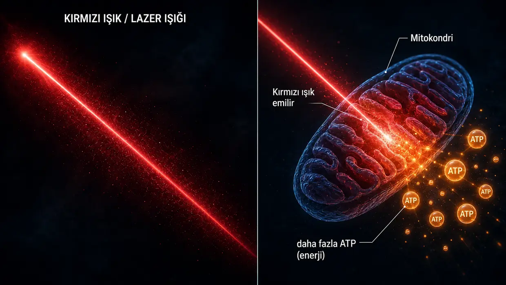
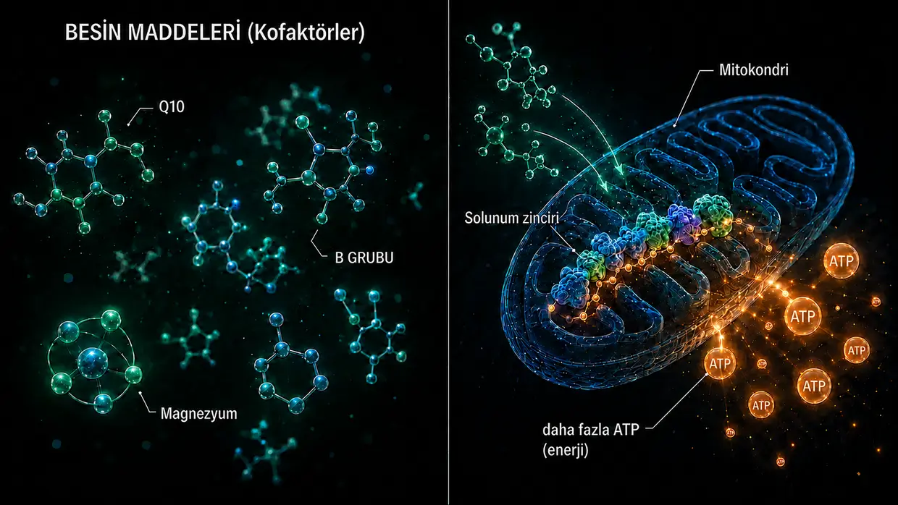

Bilimsel kaynaklar ve klinik kanıtlar
Bu sayfa, bu internet sitesinde yazdığım her şeyin altında yatan temeli gösteriyor. Modelim, tinnitusumda hücresel düzeyde neler olduğuna dair kişisel yorumumdur. Ancak tek tek yapı taşları — duyu tüylerindeki aktin filamentleri arasındaki crosslinker proteinleri, gürültüde kalpain aktivasyonu, ATP metabolizması, XIRP2 onarımı, beyindeki Central Gain, kokleadaki yerel HPA ekseni, Q10'un, B vitaminlerinin ve niasinin mitokondri üzerindeki etkisi — uydurma değildir. Bunlar araştırmalarda belgelenmiş ve hekimlerin klinik uygulamalarında denenmiştir.
Giriş: İki tür kanıt
Dürüst bir ön not: Bu sayfada iki tür kanıtı bir araya getiriyorum — ve birini baştan diğerinin üstüne koymadan, bilinçli olarak yan yana sunuyorum.
Birincisi: Temel araştırmalardaki crosslinker proteinleri, kalpainler ve benzerlerine ilişkin mekanizma çalışmaları. Bunlar, Nature Communications, Journal of Neuroscience, PNAS ya da eLife gibi dergilerde yayımlanmış, hakem değerlendirmesinden geçmiş (bağımsız uzmanlar tarafından incelenmiş) çalışmalardır. Hücresel mekanizmanın (yani tek tek hücrelerin içindeki süreçlerin) nasıl işlediğini gösterirler — crosslinker proteinlerinin stereosilyaları nasıl stabilize ettiğini, kalpainlerin gürültüde nasıl etkinleştiğini, XIRP2'nin kırıkları ancak geçici olarak nasıl stabilize ettiğini ve ATP artışının gürültü hasarından sonra işitmeyi bireyin fiziksel kapasitesinin izin verdiği ölçüde nasıl geri kazandırdığını. Bu çalışmalar, gürültüye bağlı tinnitus modelimi anlamak için vazgeçilmezdir.
İkincisi: Deneyimli doktorların klinik uygulamalarından gelen kanıtlar (yani deneyimli doktorların yıllar boyunca gerçek hastalarda doğrudan görüp belgeledikleri). Bunlar, 1987'den beri — yani 35 yılı aşkın süredir — iç kulak hastalarına kesintisiz olarak düşük seviyeli lazer tedavisi (LLLT) uygulayan ve tedavi öncesi ile sonrası odyogramlarını standart dokümantasyon olarak tutan Dr. Lutz Wilden gibi isimlerden gelen kanıtlardır. Buna, kendi uyguladıkları tedaviyi kontrol odyometrileriyle izleyen dünya çapında binlerce ev tipi lazer kullanıcısı da ekleniyor. İsviçre'de Tinnitool da 1990'lı yıllardan bu yana aynı etki mantığıyla (LLLT → işitme hücrelerinde ATP artışı) binlerce hastaya tedavi sundu. Bunlara Prag'daki Hahn grubu (yayımlanmış iki çalışmada 540 hasta), Japonya'daki Kyoto University ve Brezilyalı bir araştırma grubu da dâhil — lazer yeterince güçlü olduğunda her birinde ölçülebilir iyileşmeler görüldü. Aşağıda, çok zayıf lazer kullanan ve adil bir testte hiçbir şey bulmayan çalışmaları da dürüstçe değerlendiriyorum. Ya da ağır metal ve toksin yükleri üzerinde onlarca yıldır çalışan Dr. Dietrich Klinghardt. Bu klinik uygulama deneyiminin büyük bölümü büyük uzmanlık dergilerinde (Nature Communications gibi) yayımlanmış değil — Wilden bunun nedenlerinden kendisi söz ediyor. Ancak bu, son on yıllar boyunca bu yolla gerçekten kayda değer sayıda gerçek hastanın odyometri kanıtlarıyla iyileştiği gerçeğini değiştirmiyor.
Neden her iki kaynak türü de önemli
Yalnızca hakem değerlendirmesinden geçmiş çalışmalar ciddiye alınabilecek tek gerçekmiş gibi davranmak yerine, her iki kanıt kaynağını yan yana sunmayı daha dürüst buluyorum. Bana göre bunun nedeni, tinnitus araştırma fonlarının büyük bölümünün daha çok işitme cihazı geliştirmeye ve patent korumalı ilaç geliştirme süreçlerine yönelmesidir. Patentlenemeyen besin maddesi kombinasyonları, belirli yüksek doz lazer protokolleri ya da detoks protokolleri için hiçbir kurumsal araştırma ilgisi yoktur.
Ben doktor, bilim insanı ya da araştırmacı değilim. Daha önce bu sorunu yaşamış ve iki kez iyileşmiş biriyim — her iki iyileşme de odyometriyle belgelendi — ve takıntılı denecek kadar çok okudum, araştırdım ve denedim. Burada bir çalışmadan ya da doktordan alıntı yapmam, benim yolumun sende işe yarayacağının kanıtı olduğu anlamına gelmez. Bu, dayandığım tek tek yapı taşlarının araştırmada ve klinik uygulamada ciddiye alındığı anlamına gelir. Akut şikâyetlerde — özellikle akut tinnitus ya da işitme kaybında — organik nedenleri değerlendirtmek için lütfen önce bir KBB uzmanına başvur.
Detaya girmeden önce bir şey söyleyeyim: Tüm araştırmalarımdan çıkardığım en önemli sonuç, tekrar tekrar karşıma çıkan bir örüntü — tüy hücrelerindeki enerji üretiminin hissedilir biçimde artırıldığı her yerde tinnitusta iyileşme görüldü. Birbirinden tamamen farklı üç yol, tek bir ortak payda. Bunu aşağıda sana ayrıntılı olarak gösteriyorum: Doğrudan oraya atlamak isteyen buraya tıklayabilir. Diğerlerini ise önce işin temeline götürüyorum — kulağın nasıl yapılandığına ve nelerin bozulduğuna.
1. Bölüm: Temel araştırmalardan mekanizma çalışmaları
Stereosilyalardaki aktin filamentleri arasındaki crosslinker proteinleri
Ana sayfada duyu tüylerini, kısa protein köprüleri — crosslinker proteinleri — tarafından bir arada tutulan pişmemiş bir spagetti demetine benzetiyorum. Bu crosslinker proteinleri benim icadım değil. Bunlar üç somut protein ailesidir — Plastin/Fimbrin (PLS1), Espin (ESPN) ve Fascin-2 (FSCN2) — ve duyu tüylerindeki varlıkları ile işlevleri 20 yılı aşkın süredir moleküler düzeyde belgelenmiştir.
Krey JF, Krystofiak ES, Dumont RA, et al. (2016). Plastin 1 widens stereocilia by transforming actin filament packing from hexagonal to liquid. Journal of Cell Biology, 215(4), 467–482. PMID: 27811163. Bağlantı
Crosslinker proteinlerinin nicel olarak belirlenmesine ilişkin kilit çalışma. Krey ve ark., kütle spektrometrisi kullanarak tek bir stereosilyanın aktin filamentleri arasında yaklaşık 30.500 Plastin-1 molekülü, 16.100 Fascin-2 molekülü ve 14.800 Espin molekülü içerdiğini saptadı. Plastin-1, aktinin kendisinden sonra tüm stereosilyada en bol bulunan ikinci proteindir. İşlevsel Plastin-1 veya Fascin-2 bulunmayan farelerde işitme işlevi azalmıştı; çift mutantlar en ağır etkilenen gruptu. Plastin-1 bulunmayan stereosilyalar, yabanıl tip stereosilyalardan daha kısa ve daha incedir. Bu, crosslinker proteinlerinin duyu tüylerinin yapısal bütünlüğünü gerçekten ayakta tuttuğunun doğrudan deneysel kanıtıdır.
Perrin BJ, Strandjord DM, Narayanan P, et al. (2013). β-Actin and Fascin-2 Cooperate to Maintain Stereocilia Length. Journal of Neuroscience, 33(19), 8114–8121. PMID: 23658152. Bağlantı
Fascin-2 işlevsel olarak devre dışı kaldığında ne olduğuna dair doğrudan kanıt: Fascin-2 mutasyonu bulunan farelerde ilerleyici, yüksek frekanslı işitme kaybı ve ikinci ile üçüncü stereosilya sıralarında özgül bir kısalma görülür. Mutant Fascin-2 varyantı hâlâ aktine bağlanabilse de filamentleri artık etkili biçimde çapraz bağlayamaz — tüyler tam da bu nedenle uzunluklarını kaybeder. Bu, ana sayfada gürültüye bağlı crosslinker kaybı için anlattığım yapısal sonucun aynısıdır; ancak burada kalpain kesimi yerine genetik bir mutasyonla simüle edilmiştir.
Sekerková G, Zheng L, Loomis PA, et al. (2004). Espins are multifunctional actin cytoskeletal regulatory proteins in the microvilli of chemosensory and mechanosensory cells. Journal of Neuroscience, 24(23), 5445–5456. PMID: 15190118. Bağlantı
Espin proteininin stereosilyalarda aktin crosslinker proteini olarak yapısal karakterizasyonu. Espin, paralel aktin filamentlerini demetleyen bir protein olarak tanımlanır ve kalsiyum tarafından inhibe edilemez — bu önemlidir, çünkü stereosilyaların içi normal işlev sırasında kalsiyum dalgalanmalarına maruz kalır. Espin proteinleri kusurlu olan fareler sağırdır ve denge bozuklukları vardır. Espin mutasyonları insanlarda da kalıtsal sağırlığa yol açar.
Tüm bunların birlikte anlamı şu: Üç crosslinker proteininin — Plastin/Fimbrin, Espin ve Fascin-2 — genetik mutasyon ya da knockout nedeniyle bozulması bile işitme kaybına ve yapısal stereosilya kusurlarına yol açıyorsa, bu ya da ilişkili crosslinker proteinlerinin sonradan, gürültünün tetiklediği kalpainler tarafından kesilmesinin — ana sayfada anlattığım gibi — aynı yapısal sonuca yol açabileceği biyolojik açıdan makuldür.
Gürültüde kalpain aktivasyonu
Gürültü sırasında tüy hücresine çok büyük miktarda kalsiyum girer. Bu kalsiyum yüklenmesi, ardından aktini çapraz bağlayan proteinleri parçalayan kalsiyuma bağımlı proteaz enzimleri olan kalpainleri etkinleştirir. Bu mekanizmanın gerçek olduğu, farklı kalpain inhibitörleri kullanan birbirinden bağımsız iki araştırma laboratuvarınca ortaya konmuştur.
Lai R, Fang Q, Wu F, Pan S, Haque K, Sha SH. (2023). Prevention of noise-induced hearing loss by calpain inhibitor MDL-28170 is associated with upregulation of PI3K/Akt survival signaling pathway. Frontiers in Cellular Neuroscience, 17, 1199656. Bağlantı
Kalpain mekanizmasına dair doğrudan kanıt: Gürültü, tüy hücrelerinde µ-kalpain ve m-kalpaini aktive eder ve kalpain inhibitörü MDL-28170 hem işitme kaybını hem de sinaps kaybını önler. Çalışma ayrıca kalpainin hücre korteksindeki bir spektrin-aktin çapraz bağlayıcısı olan α-Fodrin adlı yapısal proteini parçaladığını gösteriyor. Bu, stereosilyaya özgü Plastin/Espin/Fascin-2 ile tam olarak aynı crosslinker türü değildir; ancak gürültü sırasında kalpainin aktive edildiğini ve aktini çapraz bağlayan proteinlere saldırdığını ortaya koyar. Bu süreçte stereosilya crosslinker proteinlerinin de etkilenebileceği, bu yakınsamadan doğan makul bir hipotezdir.
Yamaguchi T, Yoneyama M, Ogita K. (2017). Calpain inhibitor alleviates permanent hearing loss induced by intense noise by preventing disruption of gap junction-mediated intercellular communication in the cochlear spiral ligament. European Journal of Pharmacology, 803, 187–194. PMID: 28366808. Bağlantı
Farklı bir inhibitör (PD150606) kullanan ikinci bir laboratuvar, kalpain hasarı mekanizmasını doğruluyor. Tabloyu ikinci bir hasar noktasını da kapsayacak şekilde genişletiyor: Kalpain, gürültü sırasında spiral ligamandaki — yani kokleanın yan duvarındaki — gap junction iletişimine de saldırıyor. Gürültü hasarı hiçbir zaman tek bir bölgeyle sınırlı değildir.
Arka plan okuması: Fettiplace R, Hackney CM. (2006). The sensory and motor roles of auditory hair cells. Nature Reviews Neuroscience, 7(1), 19–29. — Tüy hücrelerinin yapısı ve işlevine ilişkin klasik derleme.
XIRP2 ile aktin onarımı (1. aşama)
Wagner EL, Im JS, Sala S, et al. (2023). Repair of noise-induced damage to stereocilia F-actin cores is facilitated by XIRP2 and its novel mechanosensor domain. eLife, 12, e72681. PMID: 37294664. Bağlantı
Tüy hücrelerinin kendi kendini onarmasına ilişkin en önemli mekanistik çalışma. Gürültü sırasında duyu tüylerinin aktin iskeletinde ölçülebilir “boşluklar” oluşur. Farelerde bunlar bir hafta içinde yeni sentezlenmiş γ-aktinle kapatılır. Onarım proteini XIRP2 hasarı mekanik olarak algılar ve onarımı başlatır. XIRP2 olmadan hasar kalıcı olur.
Ana sayfada XIRP2'yi kırık noktalarını geçici olarak stabilize eden “zırhlı tamir bandı” olarak tanımlıyorum (1. aşama). Asıl 2. aşama onarımı — yeni aktin sentezlemek, yeni crosslinker proteinleri yerleştirmek — bu çalışmada her türlü ihtiyacı eksiksiz karşılanan laboratuvar farelerinde yaklaşık bir hafta sürüyor. Bunun aynı zamanda enerji hamster çarkının içinde sıkışıp kalmış stresli yetişkin insan için ne anlama geldiği asıl soru — çünkü çoğu zaman bu onarımın gerektirdiği enerji tam da onda eksiktir.
NIH tarafından finanse edilmiştir (R01DC021176).
Onarım kaldıracı olarak ATP artışı: AC102
Bu, farmakolojik yoldaki gürültü protokolümün kalbidir: Bana göre hücrenin enerjisi çok azsa, günlük yüklerle başa çıkacak kadar hızlı ve yeterli ölçüde kendini onaramaz. İşte bu düşüncenin farmasötik açıdan ciddiye alındığını gösteren çalışmalar — Berlinli bir ilaç şirketi şu anda tam olarak bu mekanizmayı hedefleyen bir ilaç geliştiriyor.
Rommelspacher H, Bera S, Brommer B, Ward R et al. (2024). A single dose of AC102 restores hearing in a guinea pig model of noise-induced hearing loss to almost prenoise levels. PNAS, 121(15), e2314763121. PMID: 38557194. Bağlantı
AC102'nin temel çalışması. İn vitro testler, AC102'nin hücresel ATP üretimini belirgin biçimde artırdığını ve aynı zamanda reaktif oksijen türlerini (ROS) parçaladığını gösterdi. Hayvan modelinde tek bir doz, gürültü travmasından sonra işitmeyi anlamlı ölçüde iyileştirdi — çalışma başlığında “neredeyse gürültü öncesi düzeylere” diye tarif ediliyor (somut olarak: ortalama 80 dB'lik gürültü kaynaklı işitme kaybında 13–31 dB iyileşme — anlamlı, ancak tam bir geri kazanım değil). Mekanizmalar — ATP üretimini harekete geçirmek, ROS'u azaltmak, sinapsları korumak — modelimin işleyişiyle birebir aynıdır; yalnızca burada farmakolojik yoldan zorla devreye sokuluyor.
Tziridis K, Rasheed J, Kwiatkowska M, et al. (2025). A Single Dose of AC102 Reverts Tinnitus by Restoring Ribbon Synapses in Noise-Exposed Mongolian Gerbils. International Journal of Molecular Sciences, 26(11), 5124. Bağlantı
Burada AC102'nin tinnitusa özgü davranış örüntülerini tersine çevirip çevirmediği de test edildi. Sonuç: Evet, büyük ölçüde — ayrıca tüy hücreleri ile işitme siniri arasındaki ribbon sinapslar anlamlı ölçüde toparlandı. Hücresel enerji geri geldiğinde işitme sinirindeki sürekli glutamat ateşinin durduğuna dair doğrudan kanıt.
Nieratschker M, Yildiz E, Gerlitz M, et al. (2024). A preoperative dose of the pyridoindole AC102 improves the recovery of residual hearing in a gerbil animal model of cochlear implantation. Cell Death & Disease, 15, 531. Bağlantı
AC102 kanıtlarını ikinci bir hasar yoluna genişletiyor: Etken madde, koklear implantasyon travmasında da kalan işitme yetisini koruyor. Bu, mekanizmanın hasarı tetikleyen etkenden bağımsız olarak işlediğini gösteriyor — ister gürültü ister ameliyat kaynaklı mekanik travma olsun, hücresel acil durum kaskadı aynıdır ve ATP kaldıracı her iki durumda da işler.
AudioCure Pharma GmbH. Clinical Study NCT05776459. AC102 şu anda ani sensörinöral işitme kaybı (SSNHL) olan hastalarda yürütülen Avrupa çapında bir 2. faz çalışmasında araştırılıyor — 210 hasta çalışmaya dâhil edildi, katılımcı alımı tamamlandı, sonuçlar henüz çıkmadı. Bağlantı
Stres, HPA ekseni ve nöroendokrin bir organ olarak koklea
Strese bağlı tinnitusu bilimsel olarak kavramak, gürültüye bağlı tinnitusa göre daha zor; ancak temelde yatan ilke — kronik stresin HPA ekseni üzerinden kokleayı doğrudan etkileyebileceği — yaklaşık 15 yıldır kapsamlı biçimde araştırılıyor. Belirleyici bulgu şu: Kokleanın kendisine ait, eksiksiz ve yerel bir HPA sistemi var. Koklea yalnızca sistemik stres hormonlarının alıcısı değil; bunları yerel olarak da üretiyor.
Graham CE, Vetter DE. (2011). The mouse cochlea expresses a local hypothalamic-pituitary-adrenal equivalent signaling system and requires corticotropin-releasing factor receptor 1 to establish normal hair cell innervation and cochlear sensitivity. Journal of Neuroscience, 31(4), 1267–1278. PMID: 21273411. Bağlantı
Kilit çalışma. Fare kokleası HPA ekseninin tüm sinyal sistemini yerel olarak eksprese ediyor: kortikotropin salgılatıcı faktör (CRF), CRF1 reseptörü, ACTH, mineralokortikoid reseptörü ve glukokortikoid reseptörü. CRF1 reseptörü devre dışı bırakılmış farelerde tüy hücrelerinin innervasyonu bozuluyor ve koklear duyarlılık azalıyor. Bu, stresin yalnızca beyin üzerinden değil, doğrudan kulakta da etki gösterebileceğine dair mekanistik kanıt.
Graham CE, Basappa J, Vetter DE. (2010). A corticotropin-releasing factor system expressed in the cochlea modulates hearing sensitivity and protects against noise-induced hearing loss. Neurobiology of Disease, 38(2), 246–258. PMID: 20109547. Bağlantı
Graham ve Vetter'in 2011 tarihli çalışmasından önce gelen bu çalışma, kokleadaki yerel CRF sisteminin işitme duyarlılığını modüle ettiğini ve gürültüye bağlı işitme kaybına karşı koruma sağlayabileceğini gösteriyor.
Furuta H, Mori N, Sato C, et al. (1994). Mineralocorticoid type I receptor in the rat cochlea: mRNA identification by PCR and in situ hybridization. Hearing Research, 78(2), 175–180. PMID: 7982810. Bağlantı
Tarihsel ilk tanımlama: Mineralokortikoid reseptörleri kokleanın stria vaskülarisinde eksprese ediliyor — yani iç kulağın, endolenfin potasyum rezervini koruyan “pilinde”. Kortizol burada mineralokortikoid reseptörleri üzerinden potasyum salgılanmasını modüle edebilir. Bu, psikolojik stres ile periferik iç kulak etkisi arasındaki mekanistik köprü.
Mazurek B, Haupt H, Olze H, Szczepek AJ. (2012). Stress and tinnitus – from bedside to bench and back. Frontiers in Systems Neuroscience, 6, 47. Bağlantı
Berlin'deki Charité'nin sistematik sentezi: Mazurek ve Szczepek, Graham/Vetter ile Furuta'nın özgün bulgularını stresin tinnitusu nasıl tetikleyebileceğine ilişkin test edilebilir üç hipotez hâlinde bir araya getiriyor — kokleanın yerel HPA sistemi üzerinden; stria vaskülaristeki mineralokortikoid reseptörlerinin kortizol tarafından modüle edilmesi ve bunun potasyum salgılanmasına etkisi üzerinden; işitme yolundaki glutamat aracılı plastisite üzerinden.
Hébert S, Lupien SJ. (2007). The sound of stress: Blunted cortisol reactivity to psychosocial stress in tinnitus sufferers. Neuroscience Letters, 411(2), 138–142. PMID: 17084027. Bağlantı
Tinnitus hastaları akut psikososyal stres karşısında gecikmiş ve zayıflamış bir kortizol yanıtı gösteriyor — bu, kronik olarak tükenmiş bir HPA ekseninin işareti. Aynı örüntü CFS ve tükenmişlikte de görülüyor. Biyografik olarak bende de durum tam olarak böyleydi — HPA tükenmişliği tinnitustan önce geldi, tersi değil.
Manohar S, Chen GD, Li L, Liu X, Salvi R. (2023). Chronic stress induced loudness hyperacusis, sound avoidance and auditory cortex hyperactivity. Hearing Research, 431, 108726. PMID: 36905854. Bağlantı
Doğrudan deneysel kanıt: Kronik kortizol stresine maruz kalan sıçanlar, herhangi bir akut gürültü maruziyeti olmadan hiperakuzi davranışları ve işitsel kortekste tinnitus benzeri örüntüler geliştiriyor. Bu, stres kanalını bağımsız bir giriş yolu olarak destekliyor.
Schaette R, McAlpine D. (2011). Tinnitus with a Normal Audiogram: Physiological Evidence for Hidden Hearing Loss and Computational Model. Journal of Neuroscience, 31(38), 13452–13457. Bağlantı
Central Gain modelinin temeli: İşitsel girdi azaldığında merkezi işitme sistemi duyarlılığını artırıyor — ve güçlendirilmiş bir gürültü biçiminde tinnitus oluşturuyor.
Auerbach BD, Rodrigues PV, Salvi RJ. (2014). Central Gain Control in Tinnitus and Hyperacusis. Frontiers in Neurology, 5, 206.
Eggermont JJ, Roberts LE. (2004). The neuroscience of tinnitus. Trends in Neurosciences, 27(11), 676–682.
Central Gain kavramına genel bakış: Beyin, periferik girdi kaybını merkezi güçlendirmeyle telafi ediyor — tinnitus ve hiperakuzi de bunun yan etkileri olarak ortaya çıkıyor. Eggermont/Roberts (klasik çalışma): Tinnitusa, işitsel kortekste değişmiş spontan nöral etkinlik ve değişmiş tonotopik organizasyon eşlik ediyor.
Travma, depolanmış stres ve komşu sinir yollarının birlikte uyarılması
Önceki bölüm, kronik stresin HPA ekseni üzerinden doğrudan iç kulakta nasıl etki gösterebileceğini anlatıyor. Ancak bu, tablonun yalnızca bir parçası. En az onun kadar önemli olan ikinci parça şu soruyla ilgili: Sinir sisteminde kayıtlı bir travma yıllar sonra bile nasıl fiziksel belirtiler tetikleyebilir — ve yerel, kendi başına çalışan bir stres odağı komşu sinir merkezlerini gerçekten nasıl birlikte etkinleştirebilir?
Michael Prgomet'in didaktik olarak “elektrostatik gerilim alanı” diye tanımladığı mekanizma tam da bu (bkz. 14. Bölüm). Modeli strese bağlı tinnitus sayfamda basit bir dille kurdum. Bu bölüm şunu gösteriyor: Bu modelin temelindeki tek tek nörobiyolojik yapı taşları bilimsel olarak sağlam biçimde yerleşmiş durumda. Sentezin özgün yanı, bu yapı taşlarının tutarlı bir açıklama modelinde birbirine bağlanması — tek tek mekanizmaların her biri hakemli çalışmalarda ortaya konmuş ve defalarca tekrarlanmış durumda.
5.1.1 Travma ölçülebilir nörobiyolojik izler bırakır
Güçlü ya da kronik bir stres yaşantısının belirli beyin bölgelerinin yapı ve işlevini değiştirdiği kanıtlanmıştır. Travma “yalnızca psikolojik” kalmaz; sinir sisteminin fiziksel bağlantılarına işlenir.
McEwen BS, Nasca C, Gray JD. (2016). Stress Effects on Neuronal Structure: Hippocampus, Amygdala, and Prefrontal Cortex. Neuropsychopharmacology, 41(1), 3–23. PMID: 26076834. Bağlantı
Kronik stresin hipokampus, amigdala ve prefrontal kortekste ölçülebilir yapısal ve işlevsel değişiklikler tetiklediğini açıklıyor. Bellek, korku, değerlendirme ve stres düzenlemesinde merkezî rol oynayan bölgeler tam da bunlar — yani kalıcı olarak etkin bir stres örüntüsünde rol oynayan yapıların ta kendisi.
Sherin JE, Nemeroff CB. (2011). Post-traumatic stress disorder: the neurobiological impact of psychological trauma. Dialogues in Clinical Neuroscience, 13(3), 263–278. PMID: 22034143. Bağlantı
Travmanın uzun vadeli nörobiyolojik etkilerine ilişkin derleme: Amigdala hiperreaktivitesi, prefrontal kontrol eksiklikleri, hipokampus değişiklikleri ve stres hormonu sistemlerinde kalıcı değişiklikler. Dolayısıyla travma, durum sona erer ermez geçmişte kalmaz — sinir sisteminin bağlantılarına işlenmiştir.
Yehuda R, LeDoux J. (2007). Response Variation following Trauma: A Translational Neuroscience Approach to Understanding PTSD. Neuron, 56(1), 19–32. PMID: 17920012. Bağlantı
Travmanın HPA eksenini, noradrenerjik sistemi, otonom reaktiviteyi ve hipokampus işlevini uzun vadede değiştirebildiğini gösteriyor. Arka planda çalışmaya devam edebilen kayıtlı stres örüntülerinin mekanistik temelini bu oluşturuyor.
5.1.2 Allostatik yük — neden ancak kronik stres sorun yaratıyor?
Akut, durumsal stres sağlıklıdır ve beden bununla rahatça başa çıkabilir. Strese bağlı tinnitus sayfasında anlattığım olgular sıradan bir tartışmada ya da akut bir yük altında ortaya çıkmaz — ancak sistem artık toparlanamadığında ve yük zaman içinde biriktiğinde oluşur.
McEwen BS. (1998). Stress, Adaptation, and Disease: Allostasis and Allostatic Load. Annals of the New York Academy of Sciences, 840(1), 33–44. PMID: 9629234. Bağlantı
Allostatik yük kavramının temelini atıyor. Akut stres yararlıdır; kronik, birikimli yük sisteme zarar verir. Modelimi yanıltıcı “Stres genel olarak tinnitus yapar” ifadesinden tam olarak bu nokta ayırıyor. Burada söz konusu olan gündelik stres değil — kronik olarak zaten yük altında olan sistemler.
McEwen BS, Stellar E. (1993). Stress and the individual: mechanisms leading to disease. Archives of Internal Medicine, 153(18), 2093–2101. PMID: 8379800.
Kronik stresin hastalığa yol açtığı mekanizmaları açıklıyor — tek tek olaylar üzerinden değil, birikimli yük üzerinden. Gündelik stres yaşayan herkesin değil, yalnızca sistemi zaten kronik olarak istikrarsızlaşmış kişilerin bu olguları neden geliştirdiğini net biçimde ortaya koyuyor.
5.1.3 Merkezi duyarlılaşma — önceden yüklenmiş sinir sistemindeki yükselteç
Kronik yük altında merkezi sinir sistemi uyaranlara karşı daha duyarlı hâle gelir. İnhibisyon azalır, uyarılabilirlik artar, uyaran eşikleri düşer. Daha önce eşik altında kalan uyaranlar birden belirtileri tetiklemeye yeter. Strese bağlı tinnitus sayfasında “önceden yüklenmiş, uyaranlara açık sistem” diye anlattığım şeyin bilimsel tanımı budur.
Woolf CJ. (2011). Central sensitization: Implications for the diagnosis and treatment of pain. Pain, 152(3 Suppl), S2–S15. PMID: 20961685. Bağlantı
Merkezi duyarlılaşmayı, merkezi nöronların normal veya eşik altı girdilere karşı artmış reaktivitesi olarak tanımlıyor. Modern ağrı araştırmalarının yerleşik temel taşlarından biri. Benim modelim bu ilkeyi strese bağlı tinnitusa aktarıyor.
Latremoliere A, Woolf CJ. (2009). Central sensitization: a generator of pain hypersensitivity by central neural plasticity. The Journal of Pain, 10(9), 895–926. PMID: 19712899. Bağlantı
Merkezi duyarlılaşmanın hücresel ve moleküler mekanizmalarını ayrıntılı biçimde açıklıyor. Önceden yüklenmiş bir sistemin, küçük stres alanlarının belirti oluşturabilmesi için gereken zemini en başta nasıl hazırladığını gösteriyor.
Yunus MB. (2008). Central sensitivity syndromes: a new paradigm and group nosology for fibromyalgia and overlapping conditions. Seminars in Arthritis and Rheumatism, 37(6), 339–352. PMID: 18191990. Bağlantı
Merkezi duyarlılaşma kavramını fibromiyaljiye, kronik yorgunluğa, irritabl bağırsak sendromuna, kronik tinnitusa ve ilişkili sendromlara uyguluyor. Benim strese bağlı tinnitus modelimi bilimsel zemine oturtan köprü tam da bu.
5.1.4 Efaptik etkileşim — komşu sinir hücrelerinin doğrudan elektriksel olarak birlikte uyarılması
Van de Graaff metaforunun arkasındaki somut nörofizyolojik öz bu. Nöral bir bölge güçlü ve eşzamanlı biçimde ateşlendiğinde, komşu sinir hücrelerini klasik bir sinaps olmadan bile gerçekten etkileyebilen yerel elektrik alanları oluşturur. Yeterli etkinlik düzeyinde bu alanlar komşu hücreleri uyarılma eşiğinin üzerine itebilir ve ateşleme davranışlarını eşzamanlayabilir. “A siniri ateşleniyor, B siniri de beraberinde sürükleniyor” ifadesinin arkasındaki mekanizma tam olarak bu.
Anastassiou CA, Perin R, Markram H, Koch C. (2011). Ephaptic coupling of cortical neurons. Nature Neuroscience, 14(2), 217–223. PMID: 21240273. Bağlantı
Kortekste efaptik etkileşimin doğrudan deneysel kanıtı. Çalışma, hücre dışı elektrik alanlarının komşu nöronların zar potansiyelini değiştirebildiğini ve aksiyon potansiyellerinin zamanlamasını eşzamanlayabildiğini gösterdi. Bu, güçlü biçimde etkin bir sinir hücresi grubunun komşu hücreleri gerçekten elektriksel olarak birlikte etkinleştirebileceğine dair temel kanıttır.
Buzsáki G, Anastassiou CA, Koch C. (2012). The origin of extracellular fields and currents — EEG, ECoG, LFP and spikes. Nature Reviews Neuroscience, 13(6), 407–420. PMID: 22595786. Bağlantı
Beyindeki elektrik alanlarının oluşumuna ilişkin temel derleme. Eşzamanlı olarak etkinleşen nöron gruplarının, gerilim gradyanları üzerinden diğer nöronları işlevsel olarak nasıl etkileyebildiğini açıklıyor. Şunu netleştiriyor: Bunlar yüksek gerilim küresindeki gibi “büyük şimşekler” değil — küçük ve yerel alan etkileri; ama gerçektir ve biyolojik olarak etki gösterirler.
Fröhlich F, McCormick DA. (2010). Endogenous electric fields may guide neocortical network activity. Neuron, 67(1), 129–143. PMID: 20624597. Bağlantı
Endojen elektrik alanlarının nöral ağ etkinliğine yalnızca eşlik etmekle kalmadığını, onu nedensel olarak yönlendirdiğini gösteriyor. Beyindeki elektrik alan etkilerinin yalnızca bir yan olgu olduğu varsayımının tabutuna çakılan son derece sağlam bir çivi.
5.1.5 Kindling — tekrarlanan uyarım örüntüyü yerleştirir
Nöral bir bölge tekrar tekrar eşik altı düzeyde uyarıldığında zamanla giderek daha kolay etkinleşir — ve gitgide daha fazla komşu bölgeyi devreye alır. Epilepsi araştırmalarında yerleşik olan bu kavram, artık kronik ağrı, travma ve uyarılma durumlarına da aktarılıyor.
Goddard GV, McIntyre DC, Leech CK. (1969). A permanent change in brain function resulting from daily electrical stimulation. Experimental Neurology, 25(3), 295–330. PMID: 4981856.
Kindling olgusuna ilişkin klasik özgün çalışma. Tekrarlanan eşik altı uyarım beyin işlevinde kalıcı bir değişiklik oluşturuyor — bölge zamanla giderek daha kolay etkinleşir hâle geliyor.
Post RM. (2007). Kindling and sensitization as models for affective episode recurrence, cyclicity, and tolerance phenomena. Neuroscience & Biobehavioral Reviews, 31(6), 858–873. PMID: 17555817. Bağlantı
Kindling kavramını duygudurum bozukluklarına, travma sonrası stres bozukluğuna (TSSB) ve kronik stres durumlarına aktarıyor. Kronik olarak yeniden etkinleşen stres örüntülerinin zamanla neden sönmek yerine daha güçlü hâle gelip daha geniş bir alana yayılabildiğini bilimsel olarak açıklıyor — strese bağlı tinnitus sayfasında anlattığım olgunun tam karşılığı.
5.1.6 Glia aktivasyonu ve nöroenflamasyon — biyokimyasal yükselteç
Kronik uyarım mikroglia ve astrositleri etkinleştirir. Bunlar, çevredeki nöronların uyarılabilirliğini ölçülebilir biçimde artıran haberci maddeler (TNF-α, IL-1β, IL-6) salgılar — böylece bütün bölgeyi daha kolay etkinleşir hâle getirir. Bu, “önceden yüklenmiş sistem” ile “stres alanının eşiği aşabilmesi” arasındaki biyokimyasal yükselteçtir.
Ji RR, Nackley A, Huh Y, Terrando N, Maixner W. (2018). Neuroinflammation and Central Sensitization in Chronic and Widespread Pain. Anesthesiology, 129(2), 343–366. PMID: 29462012. Bağlantı
Glia aktivasyonunun merkezi duyarlılaşmayı nasıl körüklediğine dair doğrudan kanıt. Mikroglia ve astrositler yalnızca pasif destek hücreleri değil — nöral uyarılabilirliği etkin biçimde modüle ediyor ve kronik yük altında sinir dokusunu kalıcı olarak uyaranlara daha açık bir duruma getirebiliyor.
Michopoulos V, Powers A, Gillespie CF, Ressler KJ, Jovanovic T. (2017). Inflammation in Fear- and Anxiety-Based Disorders: PTSD, GAD, and Beyond. Neuropsychopharmacology, 42(1), 254–270. PMID: 27510423. Bağlantı
Travma sonrası stres bozukluğu ve kronik kaygı, sinir sistemindeki ölçülebilir enflamatuvar değişikliklerle bağlantılı. Böylece döngü tamamlanıyor: Travma → stres → nöroenflamasyon → uyaranlara daha açık doku → kayıtlı stres örüntülerinin daha kolay etkinleşmesi.
5.1.7 Talamokortikal disritmi — tinnitusla doğrudan bağlantı
Kronik tinnitusta MEG ve EEG çalışmaları, talamus ile işitsel korteks arasında patolojik salınım örüntüleri gösteriyor. Yerel olarak değişmiş bir etkinlik örüntüsü, kalıcı ton algısına katkıda bulunabilen sürekli teta-gama kuplajları oluşturuyor. Bu, aşırı etkin bir stres alanı ile kalıcı tinnitus algısı arasındaki doğrudan nörofizyolojik köprü.
Llinás RR, Ribary U, Jeanmonod D, Kronberg E, Mitra PP. (1999). Thalamocortical dysrhythmia: A neurological and neuropsychiatric syndrome characterized by magnetoencephalography. PNAS, 96(26), 15222–15227. PMID: 10611366. Bağlantı
Yüksek duyarlılıklı MEG teknolojisiyle ölçülen talamokortikal disritmi kavramını, kronik nörolojik belirtilerin mekanizması olarak temellendiriyor. Üstelik talamokortikal disritmiyi ölçmekte kullanılanlar, beyindeki çok küçük ve yerel gerilim alanlarını da görünür kılabilen MEG cihazlarının ta kendisi.
De Ridder D, Vanneste S, Langguth B, Llinás R. (2015). Thalamocortical Dysrhythmia: A Theoretical Update in Tinnitus. Frontiers in Neurology, 6, 124. PMID: 26106362. Bağlantı
Kavramı MEG verileriyle doğrudan kronik tinnitusa aktarıyor. Kronik tinnitus hastalarının işitsel korteksinde patolojik teta-gama kuplajlarının ölçülebildiğini gösteriyor.
Vanneste S, De Ridder D. (2012). The auditory and non-auditory brain areas involved in tinnitus. An emergent property of multiple parallel overlapping subnetworks. Frontiers in Systems Neuroscience, 6, 31. PMID: 22586375. Bağlantı
Kronik tinnitusun hem işitsel hem de işitsel olmayan birden çok beyin ağının değişmiş etkileşimiyle bağlantılı olduğunu gösteriyor. Stres ve distres ağları burada işitsel ağlarla işlevsel olarak bağlantılı. Aşırı etkin bir stres örüntüsünün işitme sistemine yansıyabilmesini sağlayan bağlantı bu.
5.1.8 Belleğin yeniden pekişmesi (Memory Reconsolidation) — eski stres örüntüleri neden çözülebilir?
Eski duygusal anılar sonsuza dek sabit bağlantılarla yerleşmiş değildir. Yeniden etkinleştirildiklerinde kısa süreliğine kararsız bir duruma gelir ve değişmiş ya da yükü boşalmış hâlde yeniden kaydedilebilirler. Michael Prgomet'in yöntemi, EMDR ya da yeniden etkinleştirmeye dayalı diğer terapi yaklaşımlarının işleyebilmesinin bilimsel temeli budur.
Nader K, Schafe GE, Le Doux JE. (2000). Fear memories require protein synthesis in the amygdala for reconsolidation after retrieval. Nature, 406(6797), 722–726. PMID: 10963596. Bağlantı
Belleğin yeniden pekişmesine ilişkin klasik özgün çalışma. Hayvan modelinde, daha önce kaydedilmiş bir korku anısının yeniden hatırlandıktan sonra tekrar kararsız bir duruma geçebildiğini ve yeniden kararlı hâle getirilmesi gerektiğini gösteriyor — bu sırada anı hedefli biçimde değiştirilebiliyor.
Lane RD, Ryan L, Nadel L, Greenberg L. (2015). Memory reconsolidation, emotional arousal, and the process of change in psychotherapy: New insights from brain science. Behavioral and Brain Sciences, 38, e1. PMID: 24827452. Bağlantı
Kavramı terapötik uygulamaya aktarıyor. Hedefli bir yeniden etkinleştirmenin ardından anının yeni biçimde işlenmesinin eski duygusal programları değiştirebildiğini gösteriyor. Prgomet'in çalışmasının temelinde de tam olarak bu mekanizma var — özgül yöntemi klasik randomize kontrollü çalışmalarla (RCT'lerle) kanıtlanmış olmasa da.
5.1.9 Sentez: Modelim tek bir resimde
Tek tek yapı taşları bir araya getirildiğinde şu genel tablo ortaya çıkıyor — strese bağlı tinnitus sayfamda basit bir dille anlattığım şey de tam olarak bu:
- Travma ya da kronik stres beyin yapısını ve HPA eksenini değiştirir → sistem farklılaşmış bir temel mimari taşır (5.1.1)
- Allostatik yük birikir, sistem artık toparlanamaz → sistem önceden yüklenmiş hâle gelir (5.1.2)
- Merkezi duyarlılaşma bütün sinir sistemini uyaranlara daha açık hâle getirir → eşikler düşer (5.1.3)
- Glia ve nöroenflamasyon uyaranlara açıklığı biyokimyasal olarak güçlendirir (5.1.6)
- Bir tetikleyici kayıtlı stres örüntüsünü yeniden etkinleştirir → yerel bölge daha güçlü ateşlenir
- Kindling bölgeyi zaman içinde giderek daha kolay tepki verir hâle getirmiştir (5.1.5)
- Efaptik etkileşim komşu yolların elektriksel olarak birlikte etkinleşmesini sağlar (5.1.4)
- Bu birlikte etkinleşme işitsel bilgiyi işleyen ağları etkilerse, gerçek bir ton algısı ortaya çıkabilir
- Talamokortikal disritmi bu örüntüyü sabitler (5.1.7)
- Belleğin yeniden pekişmesi şunu gösterir: Örüntünün ilk kaynağı hedefli biçimde yeniden etkinleştirilip yeniden işlendiğinde bu tür örüntüler çözülebilir (5.1.8)
Bu on yapı taşının her biri hakemli çalışmalarda ortaya konmuş ve defalarca tekrarlanmıştır. Modelimde özgün olan tek bir mekanizma değil — bu mekanizmaların birbirine bağlanmasıdır. Yerleşik KBB uygulamasında bu bağlantı nadiren bir bütün olarak düşünülür; bu nedenle strese bağlı tinnitus çoğu zaman ya “yalnızca psikolojik” diye bir kenara atılır ya da altta yatan mekanizma açıklanmadan CBT gibi tek başına uygulanan yöntemlerle tedavi edilir.
Bu bölüm neyi iddia etmiyor?
Konuyu net tutmak için burada şunlar iddia edilmiyor:
- Her kronik tinnitusun strese bağlı olduğu iddia edilmiyor. Gürültüye bağlı tinnitus, ototoksik kaynaklı tinnitus ve diğer biçimlerin başka ana nedenleri vardır (bkz. ilgili bölümler).
- Michael Prgomet'in özgül yönteminin klasik hakemli çalışmalarla kanıtlandığı iddia edilmiyor (bkz. 14. Bölüm). Kanıtlanmış olan, açıklama modelinin temelindeki tek tek nörobiyolojik mekanizmalardır.
- Kronik stres altındaki bütün psikosomatik belirtilerin tam olarak bu mekanizma üzerinden ortaya çıktığı iddia edilmiyor. Çok sayıda başka yol vardır.
- Bir iyileşme vaadi verilmiyor. Bireysel seyirler büyük ölçüde farklılık gösterebilir.
Burada açıkça belirtilen nokta şu: Strese bağlı tinnitus modelimi destekleyen tek tek yapı taşları bilimde yerleşik durumda.
İlaç ve toksin kaynaklı tinnitus
Bazı ilaçlar ve zararlı maddeler tüy hücrelerine doğrudan saldırır. İşleyiş gürültüdekinden farklıdır — ancak hücresel son nokta çoğunlukla aynıdır: mitokondrilerde aşırı kalsiyum yüklenmesi, ATP eksikliği, apoptoz. Bu da ikinci ve bağımsız bir yolun modelle aynı noktada buluşmasıdır.
Salvi R, Ding D, Manohar S, et al. (2022). Salicylate Ototoxicity, Tinnitus, and Hyperacusis. Springer Nature, Handbook of Neurotoxicity. Bağlantı
Aspirin kaynaklı ototoksisite üzerine kapsamlı bir derleme. Salisilat, dış tüy hücrelerinin elektromotor mekanizması olan prestini bloke eder ve merkezi düzeyde bir tinnitus tepkisini tetikler. Akut doz aşımı geri döndürülebilirken kronik yüksek doz kullanımı kalıcı yapısal değişikliklere yol açabilir.
Sheppard A, Hayes SH, Chen GD, et al. (2014). Review of salicylate-induced hearing loss, neurotoxicity, tinnitus and neuropathophysiology. Acta Otorhinolaryngologica Italica, 34(2), 79–93. Bağlantı
Salisilat etkilerinin ayrıntılı bir incelemesi.
Esterberg R, Linbo T, Pickett SB, et al. (2016). Mitochondrial calcium uptake underlies ROS generation during aminoglycoside-induced hair cell death. Journal of Clinical Investigation. Bağlantı
Aminoglikozid antibiyotikler (gentamisin, streptomisin) tüy hücreleri tarafından alınır ve mitokondrilerde kalsiyum alımını tetikler; bu da yoğun ROS üretimine yol açar. Mekanizma açısından bu, ana sayfada anlattığım kalsiyum-mitokondri kaskadının ta kendisi — yalnızca tetikleyici mekanik değil, kimyasal.
Jiang M, Karasawa T, Steyger PS. (2017). Aminoglycoside-Induced Cochleotoxicity: A Review. Frontiers in Cellular Neuroscience, 11, 308. Bağlantı
Aminoglikozid toksisitesine genel bakış: Mekanotransdüser kanallarından hücreye giriş, mitokondri hasarı, apoptoz.
Koenzim Q10 ve mitokondri koruması
Q10, protokolümün sabit bir parçasıydı. Mitokondriyal solunum zincirinde elektron taşıyıcısıdır ve aynı zamanda güçlü bir antioksidandır.
Fetoni AR, Piacentini R, Fiorita A, Paludetti G, Troiani D. (2009). Water-soluble Coenzyme Q10 formulation (Q-ter) promotes outer hair cell survival in a guinea pig model of noise induced hearing loss (NIHL). Brain Research, 1257, 108–116. PMID: 19133240. Bağlantı
Hayvan modeli: Q10, gürültü travmasından sonra dış tüy hücrelerindeki apoptozu istatistiksel olarak anlamlı ölçüde azalttı.
Staffa P et al. (2014). Activity of coenzyme Q10 (Q-Ter multicomposite) on recovery time in noise-induced hearing loss. Noise and Health. Bağlantı
Küçük bir insan çalışması (30 katılımcı): Suda çözünebilen Q10, gürültüye maruz kaldıktan sonraki toparlanma süresini kısalttı ve gürültünün tetiklediği tinnitusu azalttı.
Astolfi L et al. (2016). Coenzyme Q10 plus Multivitamin Treatment Prevents Cisplatin Ototoxicity in Rats. PLoS ONE, 11(9), e0162106. PMID: 27632426.
Q10 ile multivitamin, sıçanları kemoterapi ilacı sisplatinin yol açtığı ototoksik hasardan korudu — aynı koruma mekanizması, bu kez üçüncü bir yolda.
Magnezyum ve B12 vitamini
Cevette MJ, Barrs DM, Patel A, et al. (2011). Phase 2 study examining magnesium-dependent tinnitus. International Tinnitus Journal, 16(2), 168–173. PMID: 22249877. Bağlantı
Mayo Clinic çalışması: Üç ay boyunca günlük 532 mg magnezyum verilmesi, tinnitus yükü puanlarında istatistiksel olarak anlamlı bir azalmaya yol açtı.
Singh C, Kawatra R, Gupta J, et al. (2016). Therapeutic role of Vitamin B12 in patients of chronic tinnitus: A pilot study. Noise & Health, 18(81), 93–97. Bağlantı
Çift kör pilot çalışma: Tinnitus hastalarının %42,5'inde B12 vitamini eksikliği vardı. Eksikliği bulunan ve B12 enjeksiyonlarıyla tedavi edilen kişilerde istatistiksel olarak anlamlı iyileşmeler görüldü.
Shemesh Z, Attias J, Ornan M, et al. (1993). Vitamin B12 deficiency in patients with chronic-tinnitus and noise-induced hearing loss. American Journal of Otolaryngology, 14(2), 94–99. PMID: 8484483. Bağlantı
Tarihsel ilk tanımlama: Gürültü kaynaklı işitme kaybı olan tinnitusluların %47'sinde B12 eksikliği vardı — bu oran gürültüden zarar görmüş ancak tinnitusu olmayan kişilerde %27, normal işitenlerde ise yalnızca %19'du.
Biyoyararlanım ve besin maddelerinin emilimi
Biyoyararlanım sayfamda, kronik stres altındaki insanlarda besin maddelerinin formu ve veriliş biçiminin neden çoğu zaman içerik listesinden daha önemli olduğunu açıklıyorum. Bunun arkasındaki fizyoloji sağlam biçimde ortaya konmuştur — 1960'lı yıllardan bu yana milyonlarca hayat kurtaran ve dünya çapında kullanılan oral rehidrasyon tedavisinin temelidir.
Loo DDF, Zeuthen T, Chandy G, Wright EM. (1996). Cotransport of water by the Na+/glucose cotransporter. PNAS. Bağlantı
SGLT1 kotransportörüne ilişkin temel çalışma: Her taşıma döngüsünde sodyum, glikoz ve yaklaşık 260 su molekülü aynı anda vücuda pompalanır.
Buccigrossi V et al. (2020). Potency of Oral Rehydration Solution in Inducing Fluid Absorption is Related to Glucose Concentration. Scientific Reports, 10, 7803. Bağlantı
Her sodyum-glikoz karışımı aynı etkiyi göstermez — optimum oran yaklaşık 60 mmol/L sodyum ve 111 mmol/L glikozdur. Formülasyonun hassas biçimde ayarlanması gerekir.
Fareler ve insanlar — hayvan modellerine neden temkinli yaklaşıyorum
Valero MD, Burton JA, Hauser SN, et al. (2017). Noise-induced cochlear synaptopathy in rhesus monkeys (Macaca mulatta). Hearing Research, 353, 213–223. PMID: 28712672. Bağlantı
Primatlarda gürültüye maruz kalmanın ardından %12–27 oranında sinaps kaybı ölçüldü — farelerdeyse bu oran %40–55 idi. Primatlar (dolayısıyla muhtemelen insanlar da) tek seferlik gürültü maruziyetinden farelere göre daha hafif etkileniyor.
Ancak tersinden sonuç çıkarırken dikkat: Başlangıçtaki daha düşük duyarlılık otomatik olarak daha iyi bir onarım kapasitesi anlamına gelmez. Tam tersine — insanda, günlük yaşam koşullarındaki daha sınırlı kendiliğinden onarımla (stres, uyku eksikliği ve hücrelere gereken kaynakların daha sınırlı ulaşması nedeniyle) daha kapsamlı ve daha eskilere uzanan bir hasar geçmişi bir araya gelir. Bu, argümanımın temel tezlerinden biridir.
Ana izlek: ATP artışı = tinnitusta iyileşme
Ayrıntılı bölümlere geçmeden önce, her şeyin temelinde yatan ana bulguyu sana göstermek istiyorum. Bu kaynak sayfasından aklında yalnızca tek bir şey kalacaksa, o da şu olsun:
Geçtiğimiz birkaç on yıl içinde dünyanın neresinde ve hangi yolla olursa olsun, iç kulaktaki tüy hücrelerinde ATP üretimi ne zaman artırıldıysa tinnitus da her seferinde iyileşti.
Bu ne bir teori ne de boş bir temenni. Bu, en az on farklı ülkede, farklı yöntemlerle ve farklı hasta kohortlarında bilim insanları ile doktorlar tarafından araştırılıp uygulanmış birbirinden tamamen bağımsız üç tedavi yolunda tutarlı biçimde ortaya çıkan bir bulgudur. İşte üç yol — hepsi aynı biyokimyasal son noktaya çıkıyor.
1. yol: Lazer ışığıyla ATP artışı (fotobiyomodülasyon / LLLT)

600–900 nm aralığındaki lazer ışığı, mitokondrilerin solunum zincirinde bulunan sitokrom c oksidaz tarafından emilir. Biyokimyasal etkisi: daha fazla ATP, daha az oksidatif stres; hücre enerji açısından acil çalışma modundan çıkabilir.
Bu yolun başlıca temsilcileri:
- Dr. Lutz Wilden, Bad Füssing/Ibiza, 1987'den beri — binlerce tinnitus hastasını yüksek dozlu 830 nm lazerle tedavi etti, odyometrileri belgeledi ve klinik sonuçları yayımladı (ayrıntılar ve dürüst değerlendirme 12. bölümde)
- Hahn grubu, Prag Charles Üniversitesi, 2001/2012 — iki çalışmadan daha büyük olanında 420 hasta; hastaların %56,7'sinde nesnel tinnitus iyileşmesi, ortalama 30 dB; bu sonuç lazer + Ginkgo (EGb 761) kombinasyonuyla elde edildi (dolayısıyla kombinasyon tedavisini destekler, lazer monoterapisini değil)
- Tauber et al., LMU Münih, 2003 — transmeatal koklea ışınlaması için TCL sistemi
- Cuda & De Caria, İtalya, 2008 — danışmanlık ile LLLT kombinasyonu
- Teggi et al., San Raffaele Milano, 2008/2009 — Ménière hastalığında LLLT
- Mollasadeghi et al., İran, 2013 — gürültü kaynaklı tinnitus üzerine çift kör RCT; sonuç istatistiksel olarak anlamlı
- Shiomi et al., Kyoto Üniversitesi, 1997 — 40 mW, 830 nm, transmeatal; öncüler
- Panhóca et al., Brezilya, 2023 — karşılaştırmalı RCT; LLLT en etkili yöntem
→ Tüm ayrıntılar: 11. bölümde LLLT doz mantığı, 12. bölümde Dr. Wilden.
2. yol: İlaçlarla ATP artışı (AC102)
Berlin'de geliştirilen bu farmakolojik etkin madde, mitokondriyal ATP üretimine doğrudan müdahale eder ve aynı zamanda reaktif oksijen türlerini (hücreye içeriden saldıran agresif atık moleküller — bir tür hücre pası) parçalar. İlaç endüstrisi burada Wilden ile Hahn'ın onlarca yıldır yaptığı şeyi, bu kez patentlenebilir bir ilaç olarak ele alıyor.
Bu yolun başlıca temsilcileri:
- Rommelspacher et al., AudioCure Pharma Berlin, PNAS dergisi 2024 — tek bir doz, hayvan modelinde gürültü travmasından sonra işitmeyi belirgin biçimde iyileştiriyor (istatistiksel olarak anlamlı, ancak tam iyileşme yok); ATP artıyor, reaktif oksijen türleri (hücre pası) azalıyor, sinapslar korunuyor
- Tziridis et al., Int. J. Mol. Sci. dergisi 2025 — ribbon sinapslar (işitme hücrelerinin sinyallerini işitme sinirine ilettiği ince temas noktaları) toparlanıyor, tinnitusa özgü davranış örüntüleri geriliyor
- Nieratschker et al., Cell Death & Disease dergisi 2024 — koklear implantasyon travmasında da etkili
- 2. faz klinik çalışma NCT05776459 — Avrupa genelinde, ani sensörinöral işitme kaybı (SSNHL) — yani iç kulakta aniden gelişen işitme kaybı — yaşayan 210 hastayla
→ Tüm ayrıntılar için 4. bölüme bak.
3. yol: Besin maddeleriyle ATP artışı

Mitokondriyal kofaktörler, solunum zincirini doğrudan destekler ya da çalışmasının önünü açar. Yeterli Q10 olmadan kompleks I/II ile kompleks III arasındaki elektron taşınması gerçekleşmez. Yeterli B12 olmadan, işitme siniri de dâhil sinir lifleri demiyelinize olur. Yeterli magnezyum olmadan ATP sentezinin kendisi de dâhil yaklaşık 600 enzimatik reaksiyon gerçekleşmez. C ve E vitaminleri, selenyum, çinko ve alfa lipoik asit gibi antioksidanlar, hücreyi enerji açısından acil çalışma modunun sonucunda oluşan reaktif oksijen türlerinden korur.
3.1 Klasik mitokondri kofaktörleri (Q10, magnezyum, B12)
- Fetoni et al., Brain Research 2009 — Q10, gürültü travmasından sonra dış tüy hücrelerindeki apoptozu istatistiksel olarak anlamlı ölçüde azaltıyor
- Staffa et al., Noise & Health 2014 — Q10, gürültüye maruz kaldıktan sonraki toparlanma süresini kısaltıyor ve tinnitusu azaltıyor
- Astolfi et al., PLOS One 2016 — Q10 ile multivitamin, sisplatin ototoksisitesine karşı koruyor
- Cevette et al., Mayo Clinic 2011 — 532 mg magnezyumun 3 ay boyunca verilmesi, tinnitus yükünü istatistiksel olarak anlamlı ölçüde azaltıyor (Önemli: plasebo kontrolü olmayan açık bir çalışma; bu nedenle yol gösterici, ancak tinnitusun kendiliğinden belirgin ölçüde değişebilmesi ve güçlü bir plasebo etkisi göstermesi yüzünden kesin kanıt değil)
- Singh et al., Noise & Health 2016 — tinnitus hastalarının %42,5'inde B12 eksikliği var; yerine koyma tedavisi, eksikliği olan hastalarda istatistiksel olarak anlamlı iyileşme sağlıyor
- Shemesh et al., 1993 — B12 ile tinnitus arasındaki bağlantının tarihsel ilk tanımlaması
→ Tüm ayrıntılar için 7. ve 8. bölümlere bak.
3.2 Niasin / B3 vitamini / NAD+ — ATP'nin en doğrudan kaldıracı
Burada atıfta bulunduğum dozlar yayımlanmış çalışmalardan alınmıştır ve kendi kendine tedavi önerisi değildir. Herhangi bir takviye kullanımından önce — özellikle yüksek dozlarda — doktorunla konuş.
Niasin (B3 vitamini; nikotinik asit, nikotinamid ve nikotinamid ribozid biçimleriyle) NAD+ ile NADH'nin doğrudan metabolik öncülüdür — bunlar mitokondriyal solunum zincirinin koenzimleridir. Yeterli NAD+ olmadan Krebs döngüsü solunum zincirine elektron sağlayamaz; bu elektronlar olmadan ATP üretilmez. Bu nedenle niasin yalnızca “tinnitus için bir başka besin maddesi” değil, tüy hücrelerindeki ATP üretiminin doğrudan bir öncülüdür. Modelim doğruysa — kronik tinnitus tüy hücresinin yaşadığı bir enerji kriziyse — niasin takviyesinin yardımcı olması gerekir. Bilimsel açıdan dürüst kalmak için şunu söylemeliyim: Niasin ve tinnitus üzerine doğrudan klinik çalışmalar eski; bunların çoğu 1940'lar ile 1980'ler arasındaki döneme ait ve büyük ölçüde kontrolsüz. Doğal tedavi uygulamalarından onlarca yıllık olumlu bildirimler var, ancak niasinin insanlarda tinnitusu iyileştirdiğini gösteren modern, çift kör bir RCT kanıtı yok. Yaklaşım mekanizma açısından son derece güçlü biçimde destekleniyor; buna karşılık insan tinnitusunda klinik açıdan hâlâ kesin olarak kanıtlanmış değil (buradaki güven, klinik uygulama yoluna dayanıyor).
Niasin flush'ı — ve biyolojik açıdan neden önemli olduğu
İlk kez nikotinik asit alan biri (özellikle aç karnına ya da 100 mg ve üzerindeki yüksek dozlarda) 15–30 dakika sonra o meşhur niasin flush'ını yaşar: Cilt ısınır, karıncalanır ve yüzden göğse, bazen uyluklara kadar kızarır. Güneş yanığı gibi görünür, ısı birikmesi gibi hissedilir. 30–60 dakika sürer, zararsızdır ve kendiliğinden geçer. İlk seferinde insan şöyle düşünür: “Ölüyorum.” İkinci seferinde: “Demek flush buymuş.” Üçüncü seferinde: “Aslında o kadar da kötü değil.”
Burada olan şu: Nikotinik asit vücutta prostaglandin D2 ve E2'nin salınmasını sağlar — bunlar damarları genişleten haberci maddelerdir. Dolayısıyla flush, maddenin biyolojik olarak etkin olduğunun ve kan akışını harekete geçirdiğinin görünür işaretidir. Klasik nikotinik asit (flush oluşturan form) modelim açısından bu nedenle bu kadar değerlidir. Buna karşılık flush oluşturmayan form olan nikotinamid de NAD+'ya dönüştürülür, ancak damarları genişletmez. Bu etkinin ne kadar uzağa ulaştığını — yalnızca cilde mi, yoksa dokuların derinlerine mi — bir sonraki bölümde ayrıntılı olarak inceledim.
Pratik notlar:
- Vücut zamanla alışır ve flush zayıflar
- Düşük dozlu sürekli kullanım için yemeklerden sonra alınan tamponlanmamış nikotinik asit en temiz yoldur
Kan akışı ne kadar ileri ulaşır? — Yalnızca cilde mi, yoksa iç kulağa kadar derin ve sistemik mi?
Nikotinik asidin iç kulağa kadar ulaşıp oradaki kan akışını artırdığını gösteren bir insan çalışması bulamadım. Yine de tam da buna işaret eden çok sayıda gösterge var.
Nikotinik asidin kan akışını harekete geçirebildiği iyi ortaya konmuş durumda — yeterli dozda etkisi alev alev yanan yüzde hemen hissedilir. Dolayısıyla asıl heyecan verici soru, maddenin etkili olup olmadığı değil, ne kadar uzağa ulaştığıdır: Bu yalnızca cilt yüzeyinde kalan bir olgu mu — yoksa dokuların derinlerine ve sistemik olarak tüm vücuda, iç kulak gibi bölgelere kadar ulaşıyor mu?
Önce biyoloji — bu yolun neden açık olduğunu anlayalım. Çalışmaları — ve beni gerçekten çarpan, bir doktora ait büyüleyici bir klinik uygulama raporunu — göstermeden önce mekanizmaya bakmakta yarar var; çünkü bütün bunların neden anlamlı olduğunu o açıklıyor.
Yeterli miktarda nikotinik asit emildiğinde kanda dolaşır ve dokulara ulaşır. Ancak damarları kendi başına açmaz — bir tetikleyicidir: Bağışıklık hücrelerinin haberci maddeler, yani prostaglandin D2 ve E2 salgılamasını sağlar. Bunların ne kadarının salgılandığı, kana ne kadar nikotinik asit ulaştığına — dolayısıyla doza ve biyoyararlanıma — bağlıdır.
Bu iki haberci maddenin rolleri farklıdır:
- D2 hızlı ve güçlü ilk darbedir. Görünen dalgayı — kızarıklığı, sıcaklığı, karıncalanmayı — taşır.
- E2 ardından devreye girer ve daha uzun süre etkili olur. Görünen kızarıklık çoktan geçtikten sonra bile etkiyi sürdürür.
Flush etkinin sonu değildir — yalnızca görünen bölümüdür.
Hanson J, Gille A, Zwykiel S, et al. (2010). Nicotinic acid- and monomethyl fumarate-induced flushing involves GPR109A expressed by keratinocytes and COX-2-dependent prostanoid formation in mice. Journal of Clinical Investigation, 120(8), 2910-2919. DOI: 10.1172/JCI42273. Bağlantı
Bu haberci maddeler daha sonra çevredeki dokuda etkili olur. Ancak etkileri yalnızca uygun reseptörlerin — yani bu anahtarlara uyan kilitlerin — bulunduğu yerlerde ortaya çıkar. Reseptörler etkinleştiğinde damarlar genişler.
Ve önemli nokta: İşte bu kilitlerin iç kulakta bulunduğu gösterilmiş durumda. Bu da orada damarların genişleyebileceğine işaret ediyor — ve birazdan göreceğimiz üzere tam da bu, hayvan modelinde doğrudan ölçüldü.
Böylece biyolojik yol açılmış oluyor: Madde yeterli miktarda kana ulaşırsa vücuda geniş ölçüde dağılır → bağışıklık hücreleri haberci maddeyi üretir → uygun kilit iç kulakta bulunur → anahtar kilide oturduğunda damar genişler.
Stjernschantz J, Wentzel P, Rask-Andersen H (2004). Localization of prostanoid receptors and cyclo-oxygenase enzymes in guinea pig and human cochlea. Hearing Research, 197(1-2), 65-73. DOI: 10.1016/j.heares.2004.04.018. Bağlantı
Nakagawa T (2011). Roles of prostaglandin E2 in the cochlea. Hearing Research, 276(1-2), 27-33. DOI: 10.1016/j.heares.2011.01.015. Bağlantı
Her şeyde tekrar eden bir örüntü. Nikotinik asit, vücut tam o sırada damarları dar tutmak istese bile damarları açar. Sağlıklı on sekiz yaşındaki herhangi bir kişide bunu görmek mümkün: Vücut, ısıyı korumak ve dolaşımı düzenlemek için dinlenme hâlinde cilt damarlarını bilinçli olarak dar tutar. Nikotinik asit bu komutu aşar ve kan akışını dinlenme düzeyinin bile üstüne çıkarır. Kızarıklık ve sıcaklık tam da bu yüzden oluşur — flush bunun gözle görülür işaretidir.
Endişelenme: Sonrasında bütün gün yüzün kıpkırmızı hâlde dolaşmazsın. Görünür kızarıklık — hızlı D2 dalgası — yaklaşık yarım ila bir saat içinde söner.
Asıl can alıcı nokta da şu: Nikotinik asit vücudun etkin bir daraltma komutunu bile aşabiliyorsa, neden tam da stres yüzünden daralmış bir iç kulak damarının önünde dursun?
Bunun tinnitus yaşayanlar için neden özellikle önemli olduğunu şöyle görüyorum. Ve böylece asıl ilgilendiğim noktaya geliyoruz.
Araştırmalarıma göre tinnitus yaşayan biri neredeyse her zaman çok yoğun bir gerginlik içindedir — çünkü bunu tinnitusun kendisi yaratır: kaygı, kötü uyku, sürekli kulaktaki sese odaklanma. Bu nedenle sinir sistemi yüksek alarm düzeyine çıkar ve orada kalır. Sürekli yüksek alarmdaki sinir sistemi (sempatik sistem) de damarları daraltır.
Benim anladığım kısır döngü tam olarak bu: Bu yüzden iç kulağa daha az kan, dolayısıyla daha az besin maddesi ve oksijen ulaşır. Bu da iyileşme için acilen gereken enerjiyi daha da azaltır.
Şimdi çalışmalara — ve beni sarsan bağlantıya — gelelim. Tam da bu durumu bir sıçan çalışması modelledi. Çalışmada sempatik sinir sistemi yapay olarak uyarıldı ve iç kulak damarlarının daralması sağlandı. Nikotinik asidin ölçülebilir etkisi ancak o zaman ortaya çıktı.
Yani etki, öncesinde kanın az ulaştığı yerde en belirgin hâle geliyor. Birazdan daha ayrıntılı anlatacağım Atkinson da damarlarının daraldığını düşündüğü hastaları özellikle tedavi etti ve başarılarını bu grupta gördü.
1 — Yalnızca ciltte değil; derinde ve sistemik (insan). Sağlıklı insanlarda ön kolun derin dokularındaki kan akışı ölçüldüğünde (cilt yüzeyinde değil), bir doz nikotinik asitten sonra dört katına çıktı. Mekanizmanın kanıtı da bununla birlikte geliyor: Bir prostaglandin blokeriyle etki üçte bire indi — demek ki genişleme, tam yukarıda anlattığım gibi prostaglandin zinciri üzerinden gerçekleşiyor.
Kaijser L, Eklund B, Olsson AG, Carlson LA (1979). Dissociation of the effects of nicotinic acid on vasodilatation and lipolysis by a prostaglandin synthesis inhibitor, indomethacin, in man. Medical Biology, 57(2), 114-117. PMID: 376964. Bağlantı
2 — Koruyucu bariyeri olan bir duyu organında gösterildi (insan, çift kör). İnsan iç kulağında yapılamayan şey — doğrudan içeri bakmak — gözde, yani tıpkı iç kulak gibi kendine ait bir kan-doku bariyeri bulunan hassas bir duyu organında yapılabilir. Niasin verildiğinde retina arteriyolleri ölçülebilir biçimde genişledi (+%5,3'lük genişleme 30 dakika sonra; +%5,8'lik genişleme 90 dakika sonra) ve koroiddeki kan hacmi +%24 arttı — çift kör olarak belgelendi. “Koruyucu bariyer etkiyi zaten engeller” itirazı böylece boşa düşüyor.
Barakat MR, Metelitsina TI, DuPont JC, Grunwald JE (2006). Effect of niacin on retinal vascular diameter in patients with age-related macular degeneration. Current Eye Research, 31(7-8), 629-634. DOI: 10.1080/02713680600760501. Bağlantı
Metelitsina TI, Grunwald JE, DuPont JC, Ying G-S (2004). Effect of niacin on the choroidal circulation of patients with age related macular degeneration. British Journal of Ophthalmology, 88(12), 1568-1572. DOI: 10.1136/bjo.2004.046607. Bağlantı
Dürüst bir nüans: Koroid çalışmasında kan hacmi arttı; kan akışı ise istatistiksel olarak değişmedi. Retina bulgusu — damarların genişlemesi — bundan etkilenmiyor.
3 — Doğrudan iç kulakta ölçüldü (hayvan). Bu, yukarıda sözünü ettiğim çalışma — şimdi kanıtıyla birlikte. Kokleadaki kan akışı doğrudan ölçüldü: Damarları yapay olarak daraltılmamış sıçanlarda kayda değer bir etki görülmedi; buna karşılık iç kulak damarları yapay olarak daraltılmış sıçanlarda istatistiksel olarak anlamlı bir artış saptandı.
Hultcrantz E, Hillerdal M, Angelborg C (1982). Effect of nicotinic acid on cochlear blood flow. Archives of Oto-Rhino-Laryngology, 234(2), 151-155. DOI: 10.1007/BF00453622. Bağlantı
Ve şimdi insanlara gelelim — 1944'te benimle aynı şeyi düşünen bir doktor
Buraya kadar mekanizmadan ve ölçüm değerlerinden söz ettik: haberci maddeler, reseptörler, hayvandaki kan akışı, gözdeki damar çapı. Bu işin bir yarısı. Diğer yarısıysa bütün bunların gerçek şikâyetleri olan gerçek insanlarda neye yol açtığı. İşte tam burada, araştırırken öyle bir şeye rastladım ki nutkum tutuldu: 1944 tarihli bir çalışmaya.
Atkinson M. (1941). Observations on the etiology and treatment of Meniere's syndrome. Journal of the American Medical Association, 116, 1753-1760.
Atkinson M. (1944). Meniere's syndrome: results of treatment with nicotinic acid in the vasoconstrictor group. Archives of Otolaryngology, 40(2), 101-107.
Atkinson M. (1944). Tinnitus aurium: observations on its nature and control. Annals of Otology, Rhinology, and Laryngology, 53, 742-751.
Atkinson M. (1947). Tinnitus aurium: some considerations on its origin and treatment. Archives of Otolaryngology, 45, 68-76. PMID: 20284478.
Atkinson M. (1948). Meniere's syndrome: observations on vitamin deficiency as the causative factor. II. The cochlear disturbances. Archives of Otolaryngology, 50, 564-588. PMID: 15393403.
New Yorklu KBB hekimi Miles Atkinson, Ménière hastalığı olan 110 hastayı yalnızca nikotinik asitle tedavi etti. Üstelik Ménière hastalığına neredeyse her zaman tinnitus da eşlik eder — tinnitus, hastalık tablosunun sabit bir parçasıdır. Atkinson'ın çalışmasını benim konum açısından bu kadar ilginç kılan da tam olarak bu: Herhangi bir komşu hastalığı değil, tinnitusu da paketin içinde taşıyan insanları tedavi etti.
Neden özellikle nikotinik asidi seçtiğine ilişkin gerekçesi, sanki kendi modelimi daha o zamandan haber veriyor: Bu hasta grubundaki şikâyetlerin, daralmış damarların yol açtığı iç kulaktaki oksijen yetersizliğinin sonucu olduğunu düşünüyordu — buradan da tedavinin mantıken damar genişletici bir madde gerektirdiği sonucuna vardı.
Bu konuda yazdığı iki şey beni gerçekten çarptı.
Birincisi: Flush'ı bir yan etki değil, etkinin dayandığı mekanizma olarak görüyordu. Nikotinik asidi özellikle seçmesinin nedeni, ona göre etkisinin — iç kulaktakiler de dâhil — en ince damarlara kadar ulaşmasıydı; ciltte gözle görülen kızarma da onun için bunun tam göstergesiydi. İstenen etkinin bu olduğunu yazıyordu, çünkü bozukluğun tam orada bulunduğunu düşünüyordu: stria vaskülarisin en ince kılcal damarlarında — yani kokleanın yan duvarında yer alan ve iç kulağın enerji dengesini besleyen o damar ağında. Benim seksen yıl sonra bu sayfada ayrıntılarıyla ortaya koyduğum düşüncenin ta kendisi.
Benim açımdan çember tam da burada kapanıyor. Çünkü parçaları yan yana koyduğunda, aslında başka bir yoruma pek yer bırakmayan bir tablo ortaya çıkıyor:
- Nikotinik asidin en küçük damarları açtığı kanıtlanmış durumda — bunu flush'ta görüyorsun; yukarıda anlattığım nikotinik asit biyolojisinin içinde de bu var.
- Stria vaskülaris tam da böyle son derece ince bir kılcal damar ağıdır. Ne özel bir doku ne de istisnai bir organ.
- Orada, vücudun diğer bütün ince damarlarından birdenbire tamamen farklı alıcılar bulunduğunu varsaymak için hiçbir neden yok. Bu reseptörlerin — yani kilitlerin — yoğunluğu farklı olabilir. Temel yapı planıysa değişmez. Üstelik uygun alıcıların insan iç kulağında bulunduğu zaten gösterilmiş durumda.
- Yeterli dozda nikotinik asit vücuda geniş ölçüde dağılır — yüzün, kulakların, ensenin ve gövdenin birlikte tepki vermesinden bunu görebilirsin.
Bütün bunları topladığında, nikotinik asidin en ince damarların her yerinde etkili olup yalnızca kokleada olmaması daha az olası varsayım olurdu.
Dozu da buna göre kararlılıkla ayarladı. Atkinson tedavisinin iki temel ilkesini şöyle tanımlar: Birincisi, damar genişletici etkiyi önce gerçekten oluşturmak; ikincisiyse şikâyetler kontrol altına girene kadar bu etkiyi sürekli korumak — ki bu aylar sürebiliyordu. Uygulamada önce her bir hastanın ne kadar güçlü tepki verdiğini görmek için bir test dozu veriyordu. Ölçütü bu tepkiydi. Ardından dozu, hastanın tolere edebildiği miktara kadar adım adım yükseltiyordu.
Yani etkinin ortaya çıkması için gerektiği kadar yükseğe bilinçli biçimde çıktı — rahat olacak kadar düşükte kalmadı. Bana göre bu, önemli bir şeyi daha açıklıyor: Daha sonraki bazı araştırmalar daha küçük miktarlarla çalışıp flush oluşturmadıklarında, aslında incelenmesi gereken asıl şeyi ıskaladılar.
İkincisi: İşte burası gerçekten ilginçleşiyor. Atkinson'ın elinde B3'ün iki formu da vardı. Amid — yani flush oluşturmayan B3 — hastalarında hiçbir işe yaramadı. Asit ise yaradı. İkisi de aynı vitamin. Demek ki yardımcı olan vitamin etkisi olamazdı — öyle olsaydı amid de aynı şekilde işe yarardı. Geriye asidin yapabildiği, amidin ise yapamadığı tek şey kalıyor: Kan dolaşımını harekete geçirmek. Atkinson böylece, bunu planlamadan, insanın isteyebileceği en temiz karşılaştırmayı sağlamış oldu. Bu aynı zamanda sonraki birçok çalışmanın neden boşa çıktığını da açıklıyor — yanlış formu test ettiler.
Peki sonuç ne oldu? İzlem süresi altı ay ile üç yıl arasında değişen 110 vakada:
- Baş dönmesi: Vakaların %84'ünde hafifledi ya da belirgin biçimde düzeldi (%38'inde tamamen ortadan kalktı)
- Tinnitus: Vakaların yaklaşık yarısında düzeldi (%52; %12'sinde tamamen ortadan kalktı)
- İşitme kaybı: Vakaların dörtte birinden biraz daha azında düzeldi (%22; %2'sinde tamamen)
Buradaki dikkat çekici nokta şu: Atkinson'ın elinde tek bir kaldıraç vardı — kan dolaşımı. Hastaları normal beslenmeye devam etti, ancak buna ek hiçbir şey almadılar: Ne eşlik eden bir tedavi ne de hedefe yönelik ek besin öğesi desteği. Bulgusunu bu kadar temiz kılan da tam olarak bu — sonuçları atfedebileceğin başka hiçbir şey yok.
Şimdi de ilk bakışta en zayıf görünen, ama beni en çok meşgul eden sayıya gelelim: İşitme kaybına.
Atkinson'ın en zayıf noktası buydu; bunu kendisi de açıkça söylüyor. Ama benim için dikkat çekici olan tam da burada yatıyor: Böyle bir düzelme hiç değilse var. Bugün hâlâ kalıcı kabul edilen bir hasarda asıl soru “Kaç kişide işitme kaybı düzeldi?” değil, “Herhangi bir kişide düzeldi mi?” sorusudur — yanıt ise evet: Ölçülebilir biçimde ve odyogramla belgelenmiş olarak. Tıpkı seksen yıl sonra benim durumumda olduğu gibi.
Nutkumun tutulduğu vaka. Atkinson, 39 yaşındaki bir erkeğin işitme eğrilerini dört farklı zaman noktasında gösteriyor — ve benim için bütün çalışmanın en güçlü bölümü bu seyir:
- İlk muayene (Aralık 1941): Etkilenen kulakta işitme kaybı, geniş bir frekans aralığında yaklaşık 50 dB düzeyinde.
- Tedaviden sonra (Haziran 1942): Aynı eğri yaklaşık 20–25 dB düzeyinde.
- Nüks (Kasım 1942): Eğri yeniden çöküyor — yaklaşık 55–65 dB düzeyine; yani başlangıç değerinin bile altına.
- Tedavi yeniden başlatıldıktan sonra (Aralık 1943): Eğri tekrar yükseliyor. Atkinson bu noktada işitmeyi neredeyse normal, tinnitusu ise yalnızca hafif olarak tanımlıyor.
Asıl mesele tam da bu nükstür. Yükselen, yeniden düşen ve sonra bir kez daha yükselen bir işitme — her seferinde tedavinin ritmiyle birlikte — tesadüfü izlemez. Dozu izler. Günlük dalgalanmalar birkaç dB aralığında olur, 30 dB civarında değil — hele aynı kaldıraçla oynarken iki kez aynı yönde hiç değil.
Peki ben bunu nasıl açıklıyorum? Bunun için bir odyogramın gerçekte neyi ölçtüğünü anlamak gerekir: Hâlâ kaç tüy hücresi bulunduğunu değil, bu hücrelerin ne kadar iyi çalıştığını. Enerji bakımından dibe vurmuş bir tüy hücresi ölü değildir. Yalnızca gelen ses dalgalarına daha zayıf tepki verir — bu da kulaktaki gerçek durumun gerektirdiğinden daha kötü görünen bir eğriye yansır.
Kan geldiğinde bu hücreler yeniden çalışır. Gelmediğinde tekrar gerilerler. Eğrilerde gördüğümüz bu iniş çıkışın ta kendisi.
Bu, tinnitus yaşayan kişilerde gerçek tüy hücresi kayıpları bulunmadığı anlamına kesinlikle gelmez — bu kayıplar elbette var, hem de kesin olarak; ancak herkeste değil. Fakat odyogramda “kayıp” olarak görünen şeyin bir bölümü yalnızca dokunun yeterince kanlanmaması olabilir. Yetersiz kanlanmaysa tersine çevrilebilir.
Geri gelmeyen şey de dikkat çekici: Yaklaşık 4.000 Hz düzeyindeki çöküş dört ölçümün tamamında kalıyor. Nedenini ancak tahmin edebilirim. Belki o bölgede hücreler gerçekten kalıcı olarak kaybolmuş ve artık toparlanamaz hâle gelmişti. Belki de toparlanmanın, izlem süresinin izin verdiğinden daha fazla zamana ihtiyacı vardı — deneyimlere göre yüksek frekanslar en uzun sürede toparlanır. Belki bu adam tam o frekans aralığına yüklenen gürültüye maruz kalmayı da sürdürüyordu. Kısacası: Bilinmiyor.
Başka bir vakadan bir ayrıntı daha: Bir hasta, güçlü bir flush ve kendini daha iyi hissetme hâli oluşturduğu için aç karnına 100 mg aldığını ve bir enjeksiyondan sonra zihninin hemen berraklaştığını bizzat anlatıyor. Maddenin etkili olduğunun hissedilebilir işareti olarak flush. Bunu ben de kendi deneyimimden biliyorum.
Bununla ne söylemiyorum? Bunun herkeste böyle gerçekleştiğini söylemiyorum. Atkinson başarısızlıkları da açıkça aktarıyor: Ayrıntılı biçimde anlattığı üç vakadan birinde baş dönmesi ortadan kalktı, ancak yüksek frekanslı tinnitus kaldı — hasta bundan ciddi biçimde etkilenmeye devam etti ve Atkinson bu vakayı açıkça başarısızlık olarak değerlendirdi.
Benim için bu, bir çelişki değil, yaklaşımımın doğrulanmasıdır: Kan dolaşımı tek başına yetmez. Gürültüye maruz kalmayı sürdüren, sürekli stres altında kalan, besin öğeleri eksik olan, uyumayan bir kişide tek bir kaldıraç çok fazla etkene karşı mücadele eder. Birden çok noktada baskı altında olan bir sistem, tek bir ayar noktasından onarılamaz.
Ancak bu çalışma benim için şunu gösteriyor: Potansiyel var. Bu hasta biyolojik açıdan özel bir vaka değildi — herkes gibi bir insandı. Bir kulak bunu yapabiliyorsa, bu yetenek temel yapı planında var demektir. Eksik olan, doğru koşullardır.
Bütün bunlar ne anlama geliyor — ve sınır nerede?
Dürüstçe ayırırsak:
- Kesin olan: Nikotinik asit derin ve sistemik kan dolaşımını artırıyor (ön kol kan dolaşımı dört katına çıktı) ve koruyucu bariyeri olan bir duyu organındaki ince damarları genişletiyor (göz, çift kör). Nesnel olarak ölçüldü.
- Biyolojik açıdan tutarlı: Bağışıklık hücresinden damara uzanan bütün yol biliniyor — uygun reseptörlerin insan iç kulağında bulunduğu da kanıtlanmış durumda.
- Hedef organda ölçüldü: Damarlar daralmışken kokleadaki kan akımı doğrudan ölçülebilir biçimde artıyor — hayvan modelinde gösterildi.
- Bir de Atkinson var: Bir doktor 110 insanı yalnızca nikotinik asitle tedavi etti — başka hiçbir şey, eşlik eden hiçbir tedavi yoktu — ve iç kulakta yer alan bir hastalık tablosu üzerindeki etkiyi belgeledi. Tedavinin ritmine göre yükselen, düşen ve yeniden yükselen işitme eğrilerine kadar. Bilinen temel etkisi damar genişletmek olan bir madde tam da orada bir şeyi değiştiriyorsa, etkisini büyük olasılıkla tam orada, yani iç kulakta gösteriyor demektir. Benim için en akla yakın açıklama bu; daha iyisini göremiyorum.
- Açık ve dürüst olmak gerekirse: Nikotinik asit altında insan iç kulağında doğrudan kan akımı ölçümüne kendi araştırmalarımda rastlamadım — bu, böyle bir ölçümün hiçbir yerde bulunmadığı anlamına gelmez.
Benim için bütün bunlar tutarlı bir tablo oluşturuyor — “kanıtlanmış” değil, ama başım dik savunduğum, sağlam temellendirilmiş bir kanaat.
Peki tinnitus gerçekten ölçüldüğünde ne oluyor? — Flottorp & Wille, 1955
Atkinson bunu yapan tek kişi değildi. On bir yıl sonra Norveçli bir araştırma ekibi aynı soruyu ele aldı — ve yöntem açısından belirleyici bir adım daha ileri gitti.
Çünkü tinnitusta temel bir sorun vardır: Onu öylece ölçemezsin. Hasta “daha sessiz” der — gerçekten daha sessiz mi oldu, yoksa hasta yalnızca öyle olduğuna mı inanıyor, kimse bilemez. Flottorp ve Wille tam da bu sorunu maskeleme adı verilen bir yöntemle çözdü: Hastanın kulağına bir ses verilir ve bu ses yavaş yavaş yükseltilir — ta ki tinnitusu bastırana kadar. Tam o anda, bunu yapabilmesi için sesin ne kadar yüksek olması gerektiği okunur. Tinnitus yüksekse yüksek bir ses gerekir. Tinnitus hafiflerse birdenbire daha düşük bir ses yeterli olur. Böylece bir his yerine elinde bir sayı olur.
Nikotinik asidi araya koyarak önce ve sonra tam olarak bunu ölçtüler.
Flottorp G, Wille C. (1955). Nicotinic acid treatment of tinnitus: a clinical-audiological examination. Acta Oto-Laryngologica, 43(Suppl. 118), 85-99. PMID: 13227997. Bağlantı
Yöntemsel açıdan en sağlam çalışma bu. Flottorp ve Wille yalnızca hastaların öznel beyanlarını toplamakla kalmadı; niasin tedavisinden önce ve tedavi sırasında tinnitusun nesnel ses yüksekliğini maskeleme yöntemiyle ölçtü — yani hastaya giderek yükselen dış sesler dinletip, dış sesin hangi düzeyden itibaren tinnitusu bastırdığını belirledi. Bu “minimum masking level”, tinnitus yoğunluğu için nesnel bir ölçümdür.
Sonuç: Ménière hastalarının ezici çoğunluğunda tinnitus belirtileri düzeldi. İşitmesi normal ya da normale çok yakın olan bir tinnitus hasta grubundaysa neredeyse bütün hastalarda ölçülebilir biçimde daha düşük tinnitus maskeleme düzeyleri ve buna ek olarak öznel düzelme görüldü. Yani niasin tinnitusu yalnızca “hissedilen” düzeyde daha sessiz kılmadı; bu değişim nesnel olarak da ölçülebildi.
Ve belirleyici nokta şu: Etkili dozlar, tam olarak flush oluşturan dozlardı. Flush'a ulaşan kişi fayda gördü. Doz çok düşük olduğu ya da flush oluşturmayan bir form (nikotinamid) kullanıldığı için buna ulaşamayan kişi fayda görmedi.
Hulshof J, Vermeij P. (1987). The effect of nicotinamide on tinnitus: a double-blind controlled study. Clinical Otolaryngology 12(3), 211-214. PMID: 2955964.
Bu çalışma, KBB derlemelerinde niasinin tinnitusta etkisiz olduğuna kanıt olarak sık sık gösterilir. Ancak daha yakından bakınca yöntemsel bir ikilem ortaya çıkıyor: Flush oluşturan formla (nikotinik asit) temiz, çift kör bir klinik çalışma (RCT) yapmak pratikte imkânsızdır; çünkü flush — yani ısı dalgası — körlemeyi anında bozar. Hasta gerçek niasini mi yoksa plaseboyu mu aldığını hemen anlar. Hulshof ve çalışma arkadaşları bu körlemeyi koruyabilmek için, yöntemsel olarak çift kör yürüttükleri çalışmalarında flush oluşturmayan forma (nikotinamid) başvurdu — yani koklear kan dolaşımı açısından belirleyici damar genişletici etkisi bulunmayan yarım bir araca. Nötr sonucu açıklayan da bu. Dolayısıyla asıl flush tedavisine karşı bir olumsuz kanıt yoktu; yalnızca körlemeyi mümkün kılan, flush oluşturmayan formun bu kullanım için yeterli olmadığının doğrulanması vardı.
Medscape'in tinnitus farmakoterapisine ilişkin derleme yazısı da bugün hâlâ şunu belirtiyor:
“Niacin has been used as therapy for tinnitus for years with variable success... Patients often sustain a blush when taking niacin in effective doses... About half of all patients with tinnitus report successful treatment with niacin.”
Kaynak: medscape.com
Yani akademik açıdan muhafazakâr Amerikan tıbbında bile tinnitus hastalarının yaklaşık %50'sinin niasin kullanırken iyileşme yaşadığı — ve flush'ın etkili dozun göstergesi olduğu — kabul ediliyor. Buna rağmen bu yaklaşım Alman KBB ana akımından neredeyse tamamen silinmiş durumda. Atkinson'dan 80 yıl sonra bu, dikkate değer bir hafıza boşluğu.
Modern mekanizma çalışmaları
Brown KD, Maqsood S, Huang J-Y, et al. (2014). Activation of SIRT3 by the NAD+ precursor nicotinamide riboside protects from noise-induced hearing loss. Cell Metabolism, 20(6), 1059-1068. PMID: 25470550. DOI: 10.1016/j.cmet.2014.11.003. Bağlantı
Okur MN, Sahin A, Yao Z, et al. (2023). Long-term NAD+ supplementation prevents the progression of age-related hearing loss in mice. Aging Cell, 22(9), e13909. PMID: 37395319. DOI: 10.1111/acel.13909. Bağlantı
Bu çalışmaların sınıflandırılması (8. ilke uyarınca önemli): Bu çalışmalar hücresel mekanizma için temel kanıtlar sunuyor; ancak insanda tinnitusu doğrudan iyileştirdiğine dair bir kanıt oluşturmuyor. Bunlar, esas olarak gürültüye bağlı işitme kaybının önlenmesini ve ribbon sinapsların korunmasını inceleyen hayvan modelleri (fareler). Brown ve çalışma arkadaşları gürültünün kokleadaki NAD+ düzeyini düşürdüğünü ve öncül madde nikotinamid ribozidin (NR), SIRT3 yolu üzerinden işitme kaybına karşı koruma sağladığını gösterdi. Okur ve çalışma arkadaşlarıysa uzun süreli NAD+ desteğinin iç kulaktaki NAD+ düzeyini koruduğunu ve ribbon sinaps kaybını önlediğini ortaya koydu. Bu çalışmalar modelimin enerji mantığını mekanizma düzeyinde destekliyor; ancak insanda var olan bir tinnitusu iyileştirmiyor.
Han S, Du Z, Liu K, Gong S. (2020). Nicotinamide riboside protects noise-induced hearing loss by recovering the hair cell ribbon synapses. Neuroscience Letters, 725, 134910. PMID: 32171805. Bağlantı
Beijing Friendship Hospital, Capital Medical University kaynaklı çalışma. NR desteği, gürültü travmasından sonra tüy hücreleriyle işitme siniri arasındaki ribbon sinapsları yeniden kuruyor — yani günümüzdeki bilgi düzeyine göre kayıpları kronik tinnitusun tetiklenmesine de katkıda bulunan yapıların ta kendilerini (gizli işitme kaybı, Hidden Hearing Loss).
Feng B, Dong T, Song X, et al. (2024). Personalized Porous Gelatin Methacryloyl Sustained-Release Nicotinamide Protects Against Noise-Induced Hearing Loss. Advanced Science, 11(12):e2305682. PMC10966548. Bağlantı
ATP modelinin doğrudan doğrulanması: Bu çalışma, gürültü travmasının kokleadaki tüy hücreleriyle spiral ganglion nöronlarında NAD+ düzeylerini düşürdüğünü ve mitokondriyal işlev bozukluğunu tetiklediğini gösteriyor. Nikotinamid desteği mitokondriyal homeostazı yeniden kuruyor ve nörotoksik hasarı hem in vitro hem de in vivo önlüyor. Bu, modelimin mantığının 2024 tarihli üst düzey bir yayında birebir doğrulanmasıdır.
Klinik korelasyon çalışmaları
Nakagawa-Nagahama Y, Igarashi M, Miura M, et al. (2023). Blood levels of nicotinic acid negatively correlate with hearing ability in healthy older men. BMC Geriatrics, 23(1):97. PMC9933288. Bağlantı
42 ileri yaştaki Japon erkek (>65 yaş): Kandaki daha düşük nikotinik asit düzeyleri, 1000 ve 2000 Hz'de yükselmiş işitme eşikleriyle istatistiksel olarak anlamlı bir korelasyon gösteriyor. Yani kanında az niasin bulunan kişi daha kötü işitiyor. NAD+ metabolizmasının işitme yetisiyle doğrudan bağlantılı olduğuna dair insanlardaki ilk klinik doğrulama.
Gao Z et al. (2025). L-shaped relationship between dietary niacin intake and hearing loss in United States adults: National Health and Nutrition Examination Survey. PLoS One, 20(2):e0319386. PMC11856504. Bağlantı
2011–2012 ve 2015–2016 NHANES verileri, 20–69 yaş arası ABD'li yetişkinler: Beslenme yoluyla düşük niasin alımı işitme kaybıyla istatistiksel olarak anlamlı biçimde ilişkili. ABD'den nüfus temelli doğrulama.
Lee DY, Kim YH. (2018). Relationship Between Diet and Tinnitus: Korea National Health and Nutrition Examination Survey. Clinical and Experimental Otorhinolaryngology, 11(3):158-165. Bağlantı
Kore çalışması: Düşük B2 ve B3 vitamini alımı, özellikle 66–80 yaş grubunda tinnitusun verdiği rahatsızlıkla istatistiksel olarak anlamlı biçimde ilişkiliydi.
Devam eden klinik çalışma
ClinicalTrials.gov NCT05849519 — Çin'de tinnitusun eşlik ettiği ani işitme kaybında “Coenzyme I” (NAD+) enjeksiyonunu inceleyen, devam eden randomize kontrollü çalışma. Sonuçlar henüz açıklanmadı; ancak NAD+'ın ani işitme kaybı/tinnitus için enjekte edilebilir bir tedavi olarak araştırılıyor olması bile şunu gösteriyor: ATP/NAD+ modeli akademik ana akım araştırmalara ulaşmış durumda. Bağlantı
Niasin / NAD+ özeti
ATP odaklı bütün tinnitus tedavileri arasında en uzun klinik geleneğe niasin sahiptir — Atkinson 1944, Flottorp & Wille 1955. Buna hayvan modellerindeki modern mekanizma doğrulaması (Brown 2014, Han 2020, Feng 2024) ve nüfus çalışmaları (Nakagawa-Nagahama 2023, Gao 2025) ekleniyor. Nikotinik asidin günümüz KBB uygulamalarında neredeyse hiç rol oynamamasının bana göre başlıca nedeni son derece yalın: Eski ve patentlenemeyen bir vitamin için, kılavuzlara girmesi adına gereken büyük ve pahalı çalışmaları kimse finanse etmiyor. Bu tür çalışmaların yokluğu maddeye karşı bir kanıt değil — ekonomik teşviklerin bulunmamasının sonucu.
3.3 Mikro besin kombinasyonlarıyla yapılan klinik çalışmalar
Wong AP, Kalinovsky T, Niedzwiecki A, Rath M. (2015). Pilot study on the effects of vitamin treatment in patients with tinnitus. Dr. Rath Research Institute (Santa Clara, ABD) kaynaklı pilot çalışma; kurumun web sitesinde yayımlandı, hakemli bir dergide değil. Bağlantı
En az üç aydır kronik tinnitusu bulunan, 44 ile 85 yaş arasındaki 18 tinnitus hastasıyla, KBB uzmanlarıyla iş birliği içinde yürütülen klinik pilot çalışma. Hastalar dört ay boyunca, doktorlarının reçete ettiği standart tedaviye ek olarak her gün belirli bir vitamin ve mikro besin kombinasyonu kullandı. İşitme ölçümleri aylık aralıklarla klinik odyometre kullanılarak yapıldı.
4 ayın sonundaki sonuçlar:
- Hastaların %30'unda: hafif işitme iyileşmesi (10 dB'ye kadar)
- Hastaların %45'inde: belirgin işitme iyileşmesi (10–20 dB)
- Hastaların %25'inde: güçlü işitme iyileşmesi (20–50 dB); işitme yetisi neredeyse normal düzeye döndü
- Hastaların %75'inden fazlasında: Kulaktaki ses azaldı
- Hastaların %50'sinden fazlasında: Tinnitus istatistiksel olarak anlamlı biçimde azaldı ya da tamamen ortadan kalktı
Küçük bir çalışma; sonuçlar açık biçimde olumlu ve çalışma KBB uzmanlarıyla birlikte yürütülmüş. Kendi modelimin öngördüğü tablonun tam karşılığı.
Petridou AI, Zagora ET, Petridis P, et al. (2019). The Effect of Antioxidant Supplementation in Patients with Tinnitus and Normal Hearing or Hearing Loss: A Randomized, Double-Blind, Placebo Controlled Trial. Nutrients 11(12):3037. PMC6950042. Bağlantı
Atina'da tinnitus hastalarıyla antioksidan desteği (multivitamin ve alfa lipoik asit) kullanılarak yürütülen çift kör, randomize, plasebo kontrollü çalışma. Yöntemsel açıdan sağlam bir standart.
Kaya H, Koç AK, Sayın İ, et al. (2015). Vitamins A, C, and E and selenium in the treatment of idiopathic sudden sensorineural hearing loss. European Archives of Oto-Rhino-Laryngology, 272(5), 1119-1125.
Ani işitme kaybı yaşayan 70 hasta, standart tedaviye ek olarak 30 gün boyunca her gün yüksek dozlu bir vitamin kokteyli aldı: 400 mg C vitamini, 56.000 IU A vitamini, 400 IU E vitamini ve 100 µg selenyum. Hastaların %85'inden fazlasında aynı zamanda tinnitus şikâyeti de vardı. Bu grup, standart tedavi alan 56 hastalık grupla (metilprednizolon, trimetazidin, hiperbarik oksijen tedavisi) karşılaştırıldı. Vitamin grubu işitmede istatistiksel olarak anlamlı derecede daha fazla iyileşme gösterdi.
Heidelberg KBB kohort çalışması 2009 — Heidelbergli bir KBB doktorunun kohort çalışması (HNO 2009; 57:3), standart tedaviye ek olarak mikro besin kullanan ani işitme kaybı/tinnitus hastalarında, yalnızca standart tedavi alan gruba kıyasla daha düşük işitme kaybı ve belirgin biçimde daha yüksek tam remisyon oranı görüldüğünü gösterdi.
3.4 3. yolun klinik uygulayıcıları
Nasıl 1. yolda (LLLT) en tanınmış klinik uygulayıcı Dr. Wilden ise, 3. yolda da (besin maddeleri) bu stratejiyi yıllardır muayenehanelerinde uygulayan, bu alanda yer edinmiş KBB hekimleri var — yasal sağlık sigortaları bunu karşılamadığı için bu uygulamalar çoğunlukla özel ücretli hizmet kapsamında sunuluyor.
Salzgitter'de muayenehanesi bulunan KBB uzmanı Dr. med. Gerd Hadrich, yıllardır özellikle tinnitus, ani işitme kaybı ve baş dönmesi için vitamin destek kürleri ve infüzyon tedavileri sunuyor. Konsepti şunlardan oluşuyor: Vitaminler, eser elementler, amino asitler, kan tuzları ve — özellikle ilginç olan — “sitrik asit döngüsünün katalizörleri”.
Sitrik asit döngüsü (Krebs döngüsü), mitokondrilerde NADH ve FADH₂'yi solunum zincirindeki ATP üretimi için elektron taşıyıcıları olarak sağlayan metabolizma basamağının ta kendisidir. Yani Hadrich, iç kulak hücrelerindeki ATP üretimini harekete geçiren maddeleri doğrudan enjekte ediyor. Almanya'da kendi muayenehanesinde çalışan bir KBB uzmanının uyguladığı, en saf hâliyle 3. yol.
→ Muayenehane profili: Dr. Hadrich, KBB Salzgitter
Hadrich tek örnek değil. Almanca konuşulan ülkelerdeki çeşitli KBB muayenehaneleri bugün tinnitus ve ani işitme kaybı için yüksek doz C vitamini infüzyonları, mikro besin kokteylleri ve antioksidan tedavileri sunuyor — uluslararası araştırma düzeyinin gerisinde kalan standart kılavuzlar ve sağlık sigortası geri ödemeleri nedeniyle bunlar özel ücretli hizmetler. Bakmayı bilen kişi, 3. yolu sessizce ve kararlılıkla uygulayan, giderek büyüyen bir Alman KBB muayenehane ağı görüyor.
Üç yol birlikte ne anlama geliyor?
Farklı ülkelerde, farklı araştırma gelenekleri içinde ve farklı yöntemlerle geliştirilmiş birbirinden tamamen bağımsız üç tedavi yolu — ve üçü de aynı biyokimyasal son noktaya çıkıyor: Tüy hücrelerinin mitokondriyal solunum zincirlerinde artan ATP üretimi.
Bu bir tesadüf olsaydı, lazer kullanan Rusların, piridoindollerle çalışan Berlinli ilaç araştırmacılarının, niasin kullanan Norveçli KBB hekimlerinin ve mikro besin infüzyonları uygulayan Alman KBB hekimlerinin birbirlerinden bağımsız olarak neden aynı biyokimyasal ayar noktasını bulduklarını açıklamak gerekirdi. Bu tesadüf değil. Birbirinden bağımsız kanıtların en saf hâliyle yakınsaması.
Bu üç yol birbiriyle çelişmiyor; birbirini tamamlıyor. En uygun tedaviyi uygulayan kişi muhtemelen üçünü birleştirir. Çözüm yaklaşımı sayfamda tam olarak bunu anlatıyorum.
2. Bölüm: Klinik uygulama kanıtları
Buraya kadar mekanizma çalışmalarını ele aldık. Bunlar, işin hücresel düzeyde nasıl çalıştığını gösteriyor. Ama tinnitus yaşayan herkes için en önemli soru “Moleküler düzeyde nasıl görünüyor?” değil, şu:
Bununla hastaları somut olarak kim iyileştirdi? “Bende işe yaradı” diyebilen, yalnızca öznel bir his değil, odyometriyle ölçülebilen iyileşmeler yaşayan insanlar nerede?
Şimdi uygulamanın içinden gelen seslere geliyoruz: Tam da bu alanda onlarca yıldır çalışan; çoğu zaman ana akımın dışında kalmış, çoğu zaman konvansiyonel tıbbın direnciyle karşılaşmış; her seferinde somut bir tedavi yaklaşımıyla ve her seferinde belgelenmiş sonuçlarla ilerlemiş doktorlara. Bu sesler, hakemli RCT'ler değil. Fakat akademik dünyada nadiren bulunan bir şeyi temsil ediyorlar: binlerce gerçek hastayla edinilmiş, onlarca yıllık doğrudan klinik deneyim.
Düşük seviyeli lazer tedavisi: Doz neden her şeyden önemli
Lazer tedavisindeki bu uygulama bölümü, bu sayfanın tamamındaki en tartışmalı konulardan biri — tam da bu yüzden burada en ayrıntılı ve en dürüst şekilde ele alıyorum. Sana yalnızca neyin işe yaradığını göstermiyorum. Çalışmaların büyük bölümünün ilk bakışta neden karmakarışık göründüğünü ve bunun arkasında gerçekte ne olduğunu da gösteriyorum.
11.1 Mekanizma — burada kimse itiraz etmiyor
Tartışmalı noktaya geçmeden önce sağlam zeminden başlayalım. Lazer ışığının hücresel düzeyde bir şey yaptığı, benim ortaya attığım iddialı bir tez değil — bu, temelini büyük ölçüde Sovyet, daha sonra Rus bir araştırmacı olan Rusya Bilimler Akademisi'nden Tiina Karu'nun attığı, onlarca yıllık temel araştırmadır.
Karu T. (2008). Mitochondrial signaling in mammalian cells activated by red and near-IR radiation. Photochemistry and Photobiology, 84(5), 1091-1099. PMID: 18651871. Bağlantı
Karu, mitokondrilerin solunum zincirindeki kilit enzimlerden biri olan sitokrom c oksidazı, kırmızı ve yakın kızılötesi ışığın birincil fotoakseptörü olarak tanımladı. Yaklaşık 600–900 nm aralığındaki ışık bir hücreye ulaştığında burada emilir, enzim daha aktif hâle gelir ve ATP üretimi artar. Bu, benim besin maddeleri yolumun da başka bir giriş kanalından ulaştığı hücresel etki mekanizmasının ta kendisidir: daha fazla ATP, daha az reaktif oksijen; hücre enerji bakımından içinde döndüğü hamster çarkından çıkar ve kendi kendini onarma süreci devreye girebilir.
Bu model bugün fotobiyomodülasyonun standart ders kitabı bilgisidir ve Harvard Medical School'daki temel araştırmalarla da doğrulanmıştır. İlginç olan şu ki Rusya, bu konuda onlarca yıldır Batı'nın belirgin biçimde ilerisinde: Düşük seviyeli lazer tedavisi orada 1974'ten beri devletin standart sağlık hizmetinin bir parçası ve binlerce klinikte uygulanıyor — Batı'da ise bu yöntem uzun süre “alternatif” diye bir kenara atıldı.
11.2 Dört belirleyici ayar noktası — “Lazer işe yarıyor mu?” neden yanlış soru
İşte yıllardır üzerinde durduğum ve bundan sonra gelecek her şeyin çıkış noktasını oluşturan bölüm burada başlıyor: Mekanizma tartışmasız. Fakat tek tek hastalarda gerçekten devreye girip girmemesi, kokleaya yeterli enerjinin ulaşıp ulaşmadığına bütünüyle bağlı. Bunu da birlikte çalışan dört belirleyici ayar noktası belirliyor:
- Güç. Tüketici rafından alınmış 5 mW'lık bir lazer işaretleyici, 200 mW'lık yüksek dozlu bir cihazdan temelden farklıdır. Bu, kademeli olarak “biraz daha az” demek değildir; arada başka bir büyüklük mertebesi vardır.
- Uygulama yolu. Işık transmeatal olarak, yani doğrudan kulak kanalından kokleaya mı yöneliyor; yoksa transmastoidal olarak mastoid çıkıntının, yani kemiğin içinden mi geçiyor? Kemik ışığı emer. Hem de çok büyük ölçüde.
- Seans başına süre. Güç aynı olsa bile altı dakikalık ışınlama ile on beş ya da yirmi dakikalık ışınlama aynı doz değildir.
- Seans sayısı. Tek bir uygulama ile haftalara yayılan bir seri aynı şey değildir.
Dalga boyunda bilinçli olarak keskin bir sayıya bağlanmıyorum. Kırmızı ışık (yaklaşık 650 nm), dokuya yakın kızılötesi ışıktan (800–900 nm) daha yüzeysel nüfuz eder — bu basit doku optiğidir, görüş meselesi değil. Ancak yeterli güçte ve doğrudan kulak kanalından uygulandığında kırmızı ışık da işe yarayabilir; biraz aşağıda bunu en güçlü tekil çalışmalardan birinde göreceksin. Burada tek bir eşik değeri değil, faktörlerin birlikte çalışması söz konusu.
Bu dört belirleyici ayar noktası benim teorim değil. Hatta bir Alman araştırma ekibi bunları deneysel olarak ölçtü:
Tauber S, Schorn K, Beyer W, Baumgartner R. (2003). Transmeatal cochlear laser (TCL) treatment of cochlear dysfunction: a feasibility study for chronic tinnitus. Lasers in Medical Science, 18, 154-161. PMID: 14505199. DOI
Münih Üniversite Hastanesi'ndeki ekip, cihazını gerçek insan temporal kemiklerinde yapılan ışık dozimetresine dayanarak geliştirdi — hastalarda denemeden önce, hangi uygulama yolu ve güçte kokleaya ne kadar ışık ulaştığını gerçekten ölçtüler. Bu, dört belirleyici ayar noktasının gerçek olduğunun ve sonradan uydurulmuş rahat bir mazeret olmadığının deneysel kanıtıdır.
11.3 Doz mantığı doğrultusunda çalışmalar
Şimdi iş somutlaşıyor. Mevcut çalışmaları ülkeye ya da yayımlandıkları yıla göre değil, az önceki mantığa göre sıralıyorum: Gerçekte ne kadar enerji ulaştı? Ortaya çıkan örüntü şaşırtıcı derecede tutarlı.
Düşük doz (5 mW, yaklaşık 650 nm kırmızı ışık) — düzgün, plasebo kontrollü testte istikrarlı biçimde çuvallıyor.
Teggi R, Bellini C, Piccioni LO, Palonta F, Bussi M. (2009). Transmeatal low-level laser therapy for chronic tinnitus with cochlear dysfunction. Audiology and Neurotology, 14(2), 115-120. PMID: 18843180. DOI
Tüm çalışmalar içindeki yöntem bakımından en temiz tasarım: çift kör, plasebo kontrollü, ek tedavisiz yalnızca lazer. 650 nm'de 5 mW. Sonuç: etki yok (THI p=0,97) — yazarların kendileri tedavinin “etkililik göstermediğini” yazıyor. Bu, lazerin işe yaramadığına dair bir karşı kanıt değil. 5 mW'ın yetersiz olduğunun kanıtı.
Effect of low level laser therapy in the treatment of cochlear tinnitus: a double-blind, placebo-controlled study. Iran, Mashhad (2015). Ear, Nose & Throat Journal, 94(1), 32-36. PMID: 25606834.
Aynı hikâye bağımsız olarak tekrarlandı: 66 hasta, çift kör, gerçek plasebo grubu; yine 650 nm'de 5 mW, dört hafta boyunca her gün 20 dakika. Üç ölçüm yönteminin tamamındaki sonuç: plasebodan fark yok (p değerleri 0,40 ile 0,67 arasında). Yazarların kendi sonucu: 5 mW/650 nm, plasebodan daha iyi değil.
Üçüncü bir çalışma tam olarak aynı düşük dozu test ettiği için burası özellikle öğretici — yalnızca bu kez plasebo grubu yoktu:
LLLT in patients with complaints of tinnitus: a clinical study. Katar, Hamad General Hospital (2012). ISRN Otolaryngology, 2012, 132060. PMID: 23724264. DOI
Test edilen cihaz: İsviçre'deki Tinnitool müşteri anketlerinde ve pazarlama rakamlarında da kullanılan cihaz sınıfıyla aynı olan, 5 mW gücünde 650 nm'lik bir lazer, yani Tinnitool. Plasebo grubu olmayan 65 hasta, tamamen öznel beş puanlı ölçek: %56,9'u herhangi bir iyileşme bildirdi.
İlk bakışta bu, başarı gibi görünüyor. Ancak bu çalışmayı aynı dozla yapılmış plasebo kontrollü sürümün hemen yanına koyduğunda ne olduğunu anında görüyorsun: Kontrol grubu olmadığında düşük doz, %57 iyileşme bildiriyor. Düzgün bir plasebo kontrolü olduğunda ise tam olarak aynı doz hiçbir şey bulmuyor. Bu, çalışmalardaki bir çelişki değil — kontrolsüz sürümdeki olumlu sonucun plasebo etkisi olduğunun canlı kanıtı. Sonradan internette destek ya da karşıtlık malzemesine dönüştürülen, kafa karıştırıcı “bana yardımcı oldu” deneyim yazılarını yaratan örüntü tam da bu.
Yüksek doz (200 mW, 830 nm, doğrudan uygulama yolu) — burada etkiler tutarlı biçimde ortaya çıkıyor.
Hahn A, Schalek P, Sejna I, Rosina J. (2012). Combined tinnitus therapy with laser and EGb 761: further experiences. International Tinnitus Journal, 17(1), 47-50. PMID: 23906827.
Prag Charles Üniversitesi KBB Kliniği, yaşları 16 ila 77 arasında değişen 420 hasta. BTL-10 soft lazer, 200 mW gücünde 830 nm — yani gerçek yüksek doz — üç haftalık ağızdan ginkgo (EGb 761) kullanımından sonra transmastoidal ve transmeatal yollar birlikte kullanılarak uygulanmış. Sonuç: 238 hasta (%56,7), tinnitus maskeleme testinde nesnel bir iyileşme gösterdi; ortalama 30 dB — yalnızca öznel olarak hissedilen değil, ölçülebilir bir sonuç. İki dürüst sınırlama var: Lazer ile ginkgo birlikte uygulandı, bu nedenle lazerin payı temiz biçimde ayrıştırılamıyor ve plasebo kontrolü yoktu. Ancak doz doğru ve ölçüm nesnel.
Shiomi Y, Takahashi H, Honjo I, et al. (1997). Efficacy of transmeatal low power laser irradiation on tinnitus: a preliminary report. Auris Nasus Larynx, 24(1), 39-42. PMID: 9148726.
Kyoto Üniversite Hastanesi. Tedaviye dirençli kronik tinnitus yaşayan 38 hastaya, transmeatal yoldan seans başına 9 dakika ve en az 10 seans olmak üzere 830 nm'de 40 mW uygulanmış. Tinnitusun şiddetinde (%58), rahatsız ediciliğinde (%55) ve süresinde (%26) öznel iyileşme. Plasebo yok, tamamen öznel bir ölçek — ama güç ve dalga boyu yine doğru büyüklük mertebesinde.
Panhóca VH et al. (2023). Effects of Red and Infrared Laser Therapy in Patients with Tinnitus. Journal of Personalized Medicine, 13(4), 581. PMID: 37108967. DOI
Ve şimdi tüm bu derlemedeki yöntem bakımından en güçlü tekil çalışmaya geliyoruz: 100'den fazla hasta, çift kör, randomize, plasebo kontrollü — yani düşük doz çalışmalarında eksik olan bileşim. Sekiz seans boyunca transmeatal yoldan 660 nm'de 100 mW (kırmızı ışık!) test edilmiş. Sonuç: Transmeatal LLLT, plasebodan istatistiksel olarak anlamlı derecede daha iyiydi ve 15 dakikalık ışınlama, 6 dakikalık ışınlamadan daha güçlü etki gösterdi. Dalga boyu sorumuz açısından önemli olan şu: Güç ve uygulama yolu doğru olduğunda burada kırmızı ışık bile işe yaradı. Bu, sabit bir dalga boyu eşiği olmadığını, dört faktörün birlikte çalışmasının belirleyici olduğunu doğruluyor.
11.4 Chen 2020 meta-analizi — bütüne en dürüst bakış
Bu noktada, ilk bakışta işime gelmese bile mevcut en katı değerlendirmeyi senden saklamak istemiyorum:
Chen CH, Huang CY, Chang CY, Cheng YF. (2020). Efficacy of Low-Level Laser Therapy for Tinnitus: A Systematic Review with Meta-Analysis and Trial Sequential Analysis. Brain Sciences, 10(12), 931. PMID: 33276501. DOI · Açık erişim
On bir randomize, plasebo kontrollü çalışma, 670 hasta. Meta-analizin resmî sonucu: LLLT'nin plaseboya kıyasla istatistiksel olarak anlamlı bir etkisi yok. Bunu gizlemiyorum; çünkü bu çalışmanın değeri tam da burada yatıyor.
Çünkü yazarlar hiçbir şey bulamamalarının nedenini kendileri açıklıyor — gerekçeleri de bir çürütmeden çok, benim doz mantığımın doğrulanması gibi okunuyor: Dâhil edilen çalışmaların çoğu yetersiz doz parametreleriyle yürütülmüş (çoğunlukla 650 nm'de 5 mW). Kemikten geçen transmastoidal uygulamada yazarlar dozu kelimesi kelimesine “terapötik açıdan yetersiz” diye tanımlıyor. Daralmış bir kulak kanalında ışık, daha kokleaya ulaşmadan emiliyor. Çalışmaların parametreleri ve kaliteleri birbirinden o kadar farklıydı ki “kontrollü, sabit ışınlama” bile güvence altına alınamamıştı. Ve yazarların kendi tartışma bölümünün sonunda söyledikleri şu: Hasta sayısının az olması, gerçek etkiyi olduğundan düşük göstermiş olabilir — hemen hemen her alt analizde LLLT lehine bir eğilim görülmüş, ancak bu eğilim istatistiksel açıdan yeterince sağlam değilmiş.
Başka bir deyişle: Var olan en katı değerlendirme kanıt bulamadı — çünkü neredeyse yalnızca yüksük kadar doz kullanan çalışmalar dâhil edilmişti. Yüksek dozlu, transmeatal, plasebo kontrollü ve aynı zamanda yeterince büyük tek bir çalışma ise bugüne kadar düpedüz yapılmadı. Bu boşluk gerçek. Ama bu, mekanizmanın aleyhine bir kanıt değil; çalışma tasarımı sorunu.
Dr. Lutz Wilden — klinik uygulama ayağı
Önceki bölümün gerektirdiği şeyi onlarca yıldır birebir yapan bir doktor varsa — sürekli yüksek doz, sürekli transmeatal uygulama ve bütün bunların çok uzun bir zaman çizgisinde belgelenmesi — o kişi Dr. med. Lutz Wilden'dır. Benim için ilk kıvılcımı çakan oydu. Çalışmalarını o zaman keşfetmemiş olsaydım ne bu web sitesi var olurdu ne de benim iyileşmem.
Wilden 1987'den beri iç kulak hastalıklarını 830 nm aralığında yüksek dozlu düşük seviyeli lazer tedavisiyle (632,8 nm'de HeNe ile birlikte), transmeatal yoldan kulak kanalının içinden doğrudan iç kulağa uygulayarak tedavi ediyor — seans başına 15 ile 30 dakika ve birkaç günden birkaç haftaya kadar tekrarlı biçimde. Bunlar, önceki bölümde etkili olduğu belirlenen parametrelerin tam karşılığı.
12.1 Wilden'ın yayınları — dürüstçe sınıflandırıldığında
Wilden uzmanlık dergilerinde birden fazla çalışma yayımladı. Burada teoriyle klinik sonuç arasında temiz bir ayrım yapmak gerekiyor:
Wilden L, Karthein R. (1998). Import of radiation phenomena of electrons and therapeutic low-level laser in regard to the mitochondrial energy transfer. Journal of Clinical Laser Medicine and Surgery, 16(3), 159-165. PMID: 9743654. DOI
Bu, gerçekten PubMed'de indekslenmiş olan tek çalışma — ancak klinik etkinlik kanıtı değil, mitokondriyal enerji aktarımına ilişkin teorik bir mekanizma modeli. Yazarlar çalışmanın sonunda bu etki üzerine yoğun ve daha ileri araştırmaların hâlâ gerekli olduğunu kendileri yazıyor. Buna rağmen çalışma, 1998'de Kansas City'deki WALT Dünya Kongresi'nde en iyi bilimsel çalışma ödülünü aldı.
Wilden L, Dindinger D. (1996). Treatment of chronic diseases of the inner ear with low level laser therapy (LLLT): a pilot project. Laser Therapy, 8(3), 209-212. Bağlantı
Wilden'ın ilk klinik çalışması — 139 hasta, ortalama yaklaşık 20 dB düzeyinde, istatistiksel olarak anlamlı bir işitme iyileşmesi. Gerçek ve yayımlanmış bir sonuç, ancak PubMed'de indekslenmeyen bir dergide. Dürüstçe söylersek: Mekanizmaya ilişkin PubMed indeksli bir çalışma ve buna ek olarak PubMed dışındaki uzmanlık dergilerinde klinik değerlendirmeler — doğru tanım budur; ne daha fazlası ne daha azı.
12.2 348 hastalık değerlendirme — doz korelasyonu dâhil
Wilden'ın değerlendirdiği 348 hastalık bir çalışmada, LLLT tedavisinden sonra işitme yetisi ortalama %20,6 arttı. Şimdiye kadar bu sayfada eksik kalan, oysa işin asıl can alıcı noktası olan bölüm de şu: İyileşme derecesi yalnızca yaş ve hastalık süresiyle değil, özellikle uygulanan enerji dozuyla korelasyon gösterdi — enerji ne kadar fazlaysa iyileşme de o kadar güçlüydü. Bütün bu bölümü taşıyan mantığın ta kendisi; bu kez Wilden'ın kendi klinik uygulama değerlendirmesi içinden doğrulanıyor.
Sınıflandırma açısından önemli: Bu değerlendirme PubMed'in hiçbir yerinde listelenmiyor. Wilden'ın kendi muayenehanesinden gelen bir klinik olgu serisi; diğer yerlerin yanı sıra şu derleme yazısında referans veriliyor: acupuncturetoday.com. Gri literatür; bağımsız olarak yeniden incelenmiş değil — ancak yukarıdaki kontrollü çalışmaların gösterdiği her şeyle kendi içinde tutarlı.
12.3 35+ yıllık kesintisiz klinik uygulama
348 hastalık değerlendirme ve 1996 pilot çalışmasındaki 139 hasta yalnızca yayımlanmış köşe taşları. Wilden 1987'den beri çalışıyor — önce Rassreuth özel KBB kliniğinde, 1997'den itibaren Bad Füssing'deki kendi muayenehanesinde, 2020'den beri buna ek olarak İbiza'daki Santa Eulària'da. İç kulakta 35 yılı aşan kesintisiz LLLT uygulaması; ayrıca 1997'den beri çeşitli ülkelerdeki kullanıcılar için kendi kendine tedavi amacıyla dağıtılan ev cihazları. Kulak başına 15–30 dakikalık 15 seanstan oluşan standart tedavi, tedavi öncesi ve sonrası odyogramlarla sistematik biçimde belgeleniyor. Bu zaman aralığında gerçekçi olarak toplam birkaç bin tedavi edilmiş hasta ortaya çıkıyor.
12.4 Wilden'la kendi temasım
2016/17'de Dr. Wilden'la bizzat doğrudan iletişimdeydim. Bana dostça danışmanlık verdi ve benim yaşımda bile iyileşme şansının hâlâ iyi olduğunu söyledi. Kısa süre sonra tam da bu gerçekleşti — paralel olarak izlediğim besin maddeleri yolu üzerinden odyometri sonuçlarım belirgin biçimde iyileşmişti. Ayrıca daha önce forum üzerinden destek olduğum iki tinnitus hastası da sonradan Dr. Wilden'ın tedavisine girdi. Her ikisinin odyometrisinde belirgin iyileşme oldu; birinde bu iyileşme çok büyük düzeydeydi.
Bu, LLLT'nin her hastada aynı güçte etki gösterdiği anlamına gelmez. Modelimde de olduğu gibi başarı bütün bağlama bağlıdır — stres, uyku, beslenme, gürültü maruziyeti, doğru besin maddeleriyle yeterli destek ve temel mitokondriyal yük. Tek bir kaldıraç yeterli değildir.
12.5 Dürüst bir bilanço
Dozu tamamen yok sayarak “LLLT tinnitusta etkili mi?” sorusunu bu kadar genel sormak, “Su susuzluğa iyi gelir mi?” diye sormak kadar anlamlı. Günde bir yüksük su, gerçekten susamış hiç kimseye yetmez — bir meta-analiz de çoğunlukla yüksük kadar doz kullanan çalışmaları aynı sepete attığında beklenen sonuç “etki yok” olur. Bu, su hakkında bir ifade değildir. Araştırmaların durumu hakkında bir ifadedir.
Gerçekte elimizde olan şu: Moleküler düzeyde iyi anlaşılmış bir mekanizma, yeterli dozda tutarlı etkiler gösteren birden fazla çalışma, belgelenmiş odyometri seyirleriyle son derece uzun bir klinik uygulama geleneği — ve neden hiçbir şey bulamadığını kendisi açıklayan katı bir meta-analiz. Eksik olan, gerçek yüksek doz ve transmeatal uygulamayla yapılmış, temiz, yeterince büyük, plasebo kontrollü o tek çalışma. Bugüne kadar neden yapılmadığının komplocu değil, son derece yalın bir nedeni var: Işığın patenti yok. Klinik 3. faz çalışmaları on milyonlarla ifade edilen meblağlara mal oluyor ve neredeyse yalnızca, sonrasında patentli bir molekülü tek başına satabilecek şirketlerce finanse ediliyor. Serbestçe kullanılabilen ışıkta bu hiç kimse için ekonomik değil — bu bir finansman boşluğu, bastırma değil.
Dürüst sonucum şu: Yeterli dozda LLLT, ortalama olarak büyük bir kaldıraçtır — ancak tek tek vakalarda son derece değişkendir; herkes için garanti değildir. Başarı hasarın derecesine, bütün bağlama ve çoğu zaman diğer bileşenlerle kurulan kombinasyona bağlıdır. Bu, mekanizmadan, kontrollü çalışmalardan ve onlarca yıllık klinik deneyimden gelen birbirinden bağımsız kanıtların yakınsamasıdır — kanıtlanmış bir mucize araç değildir, ama Google'daki kimi genel kanının ima ettiği gibi bir plasebo hikâyesi de değildir.
Dr. Dietrich Klinghardt — detoks, ağır metaller ve mikotoksinler
Not: Bu bölüm hâlâ genişletiliyor.
Dr. Dietrich Klinghardt, onlarca yıl içinde ağır metal ve mikotoksin yüklerini, kronik enfeksiyonları ve kronik enflamasyonu — tinnitus ve işitme bozuklukları dâhil — birçok kronik hastalığa katkıda bulunan nedenler olarak gören bütüncül bir tedavi yaklaşımı geliştirdi. Wilden'ın çalışmalarına benzer biçimde, onun çalışmaları da indeksli dergilerde klasik RCT'lerle kanıtlanmış değil; ancak onlarca yıldır klinik uygulamada kullanılıyor ve hedefe yönelik detokstan sonra tinnitus belirtilerinin belirgin biçimde azaldığı yüzlerce belgelenmiş vaka bulunuyor.
Bunun arkasındaki hücresel mantığı İlaç/Toksin Kaynaklı Tinnitus sayfamda daha ayrıntılı ele alıyorum: Cıva ya da kurşun gibi ağır metaller mitokondrilere doğrudan zarar verebilir, solunum zincirini bloke edebilir ve böylece gürültünün mekanik olarak tetiklediği ATP düşüşünün aynısını oluşturabilir. Son nokta aynıdır — kalsiyum birikimi, glutamat aşırı uyarımı, tinnitus. Klinghardt'ın çalışmaları, bu toksik yüklerin hedefe yönelik biçimde vücuttan uzaklaştırılmasının — özellikle toksinlerin gerçekten tinnitusun temel nedeni olduğu durumlarda — tinnitusu belirgin biçimde iyileştirebildiğini çok sayıda belgelenmiş tedavi vakası üzerinden gösteriyor.
Michael Prgomet — kinezyolojik stres çözümleme
Strese Bağlı Tinnitus sayfamda, Michael Prgomet'in yönteminin 2013'te sinir sistemimi kronik aşırı uyarılmaya sürükleyen ağır psikosomatik yükleri çözmeme nasıl yardımcı olduğunu anlatıyorum. Prgomet'in yaklaşımı beyindeki “elektrostatik gerilim alanları” kavramıyla çalışır — çözülmemiş duygusal çatışmalar yüzünden sürekli elektrik akışı içinde kalan ve hangi yolların etkilendiğine bağlı olarak kendini bedensel belirtilerle boşaltabilen aşırı aktif sinir merkezleri.
Yöntemin kendisi üzerine hakemli çalışma yok; bunu açıkça söylüyorum. Yaklaşımını burada paylaşmamın nedeni bana kişisel olarak yardımcı olmuş olmasıdır; bu, biyografi sayfamda belgelidir. Bununla birlikte söylenebilecek bir şey var: Prgomet'in açıklama modelinin temelini oluşturan tek tek nörobiyolojik mekanizmalar araştırmalarda iyi biçimde yerleşmiş durumda. Bunları 5.1. bölümde, efaptik etkileşimden kindling ve merkezi duyarlılaşmaya, belleğin yeniden pekişmesinden talamokortikal disritmiye kadar ayrıntılı biçimde belgeledim. Dolayısıyla onun didaktik “gerilim alanı” resmi, okul fiziğinin kelimesi kelimesine karşılığı değil; gerçek nörofizyolojik ilkelerin anlaşılır bir çevirisidir: Elektrik alanı etkileri, haberci maddeler ve glia duyarlılaşması üzerinden komşu yolları birlikte etkinleştirebilen, yerel olarak aşırı aktif nöral ağlar.
Yakın çevremden doğrudan hasta deneyimleri
Sıklıkla küçümsenen son bir nokta daha var: Mekanizma çalışmalarının ve doktorların klinik uygulamasının ötesinde önemli olan, bu yoldan geçmiş ve iyileşme görmüş insanların doğrudan deneyimleridir.
15.1 Kendi vakam
İki kez kronik tinnitustan etkilendim — bir kez 2011'de, bir kez 2016/17'de. İki seferde de tamamen iyileştim; iyileşme öncesi ve sonrasına ait odyometri kanıtlarıyla. Hikâyenin tamamını ve odyogramları ayrıntılı biyografimde belgeliyorum.
15.2 Diğer vakalar
Daha önce forum üzerinden destek olduğum iki tinnitus hastası, sonradan Dr. Wilden'ın tedavisine girdi. Her ikisinin odyometrisinde belirgin iyileşme oldu; birinde bu iyileşme çok büyük düzeydeydi. İkisi de kendi deneyimimden ve Wilden'la temasımdan zaten bildiğim şeyi doğruladı.
Bu bir çalışma değil. Bu, birbirinden bağımsız kanıtların yaşanmış yakınsaması.
Yasal uyarı ve son olarak önemli noktalar
Bu sayfa eksiksiz olduğu iddiasında değil. Konuyla ilgili yeni çalışmalara ya da klinik uygulamadan yeni seslere rastladıkça sayfayı düzenli olarak güncelliyorum. Okur olarak burada eksik olan önemli bir çalışma ya da önemli bir doktor biliyorsan bana yazmaktan çekinme.
Burada adı geçen çalışmaların hiçbiri ve burada adı geçen hekimlerin klinik uygulamalarının hiçbiri, benim kişisel protokolümün sende işe yarayacağının kanıtı değildir. Bunlar, dayandığım tek tek etki mekanizmalarının araştırmalarda ve klinik uygulamada ciddiye alındığına — ve insanların bu yollarla, ölçülebilir iyileşmelerle gerçekten sağlığına kavuştuğuna — ilişkin kanıtlardır.
Doktor değilim. Bu sayfa tıbbi danışmanlığın yerini tutmaz. Bu bir şeffaflık sayfasıdır: Dayandığım fikirlerin nereden geldiği izlenebilsin ve daha yakından bakmak isteyen herkes özgün kaynakları bulup kendi görüşünü oluşturabilsin diye.